Chapter 7 Beta diversity
set.seed(1234)
load("data/data.Rdata")
load("data/beta.Rdata")
genome_metadata <- genome_metadata %>%
mutate(phylum = case_when(
phylum == "Bacillota_A" ~ "Bacillota",
phylum == "Bacillota_C" ~ "Bacillota",
phylum == "Bacillota_B" ~ "Bacillota",
phylum == "Bacillota_I" ~ "Bacillota",
TRUE ~ phylum))
remove_sled <- read_csv("data/sample_metadata.csv") %>%
filter(season=="winter")
sample_metadata <- sample_metadata %>%
mutate(country = if_else(country == "Shangai domestic dog", "Shangai", country)) %>%
filter(!sample %in% remove_sled$sample) %>%
mutate(
dog_type = case_when(
breed == "Wolf" ~ "wolf",
country == "Greenland" ~ "sled_dog",
TRUE ~ "domestic"
)
)
genome_counts_filt <- genome_counts_filt %>%
select(one_of(c("genome",sample_metadata$sample)))%>%
filter(rowSums(. != 0, na.rm = TRUE) > 0) %>%
select_if(~!all(. == 0))
genome_metadata <- genome_metadata %>%
semi_join(., genome_counts_filt, by = "genome") %>%
arrange(match(genome,genome_counts_filt$genome))
genome_tree <- keep.tip(genome_tree, tip=genome_metadata$genome)beta_q0n <- genome_counts_filt %>%
column_to_rownames(., "genome") %>%
filter(rowSums(. != 0, na.rm = TRUE) > 0) %>%
select_if(~!all(. == 0)) %>%
hillpair(., q = 0)
beta_q1n <- genome_counts_filt %>%
column_to_rownames(., "genome") %>%
filter(rowSums(. != 0, na.rm = TRUE) > 0) %>%
select_if(~!all(. == 0)) %>%
hillpair(., q = 1)
genome_counts <- genome_counts_filt %>%
column_to_rownames(., "genome") %>%
filter(rowSums(. != 0, na.rm = TRUE) > 0) %>%
select_if(~!all(. == 0))%>%
rownames_to_column(., "genome")
genome_tree <- keep.tip(genome_tree, tip=genome_counts_filt$genome)
beta_q1p <- genome_counts_filt %>%
column_to_rownames(., "genome") %>%
filter(rowSums(. != 0, na.rm = TRUE) > 0) %>%
select_if(~!all(. == 0)) %>%
hillpair(., q = 1, tree = genome_tree)
save(beta_q0n,
beta_q1n,
beta_q1p,
file = "data/beta.Rdata")7.0.1 Permanova analysis
type_colors <- c('#41B6C0','#E5D388',"#bb6749")
new_labels <- c(
"domestic" = "Domestic dogs",
"sled_dog" = "Sled dogs",
"wolf" = "Wolves"
)Richness
beta_q0n_mat <- as.matrix(beta_q0n$S)
beta_q0n_filtered <- beta_q0n_mat[rownames(beta_q0n_mat) %in% sample_metadata$sample,
colnames(beta_q0n_mat) %in% sample_metadata$sample]
beta_q0n_dis <- as.dist(beta_q0n_filtered)
sample_metadata_ordered <- sample_metadata %>%
arrange(match(sample,labels(beta_q0n_dis))) %>%
column_to_rownames(., "sample")
betadisper(beta_q0n_dis, sample_metadata_ordered$country) %>% permutest(., pairwise = TRUE)
Permutation test for homogeneity of multivariate dispersions
Permutation: free
Number of permutations: 999
Response: Distances
Df Sum Sq Mean Sq F N.Perm Pr(>F)
Groups 6 0.63057 0.105095 19.209 999 0.001 ***
Residuals 315 1.72340 0.005471
---
Signif. codes: 0 '***' 0.001 '**' 0.01 '*' 0.05 '.' 0.1 ' ' 1
Pairwise comparisons:
(Observed p-value below diagonal, permuted p-value above diagonal)
Greenland India Laos Mongolia Shangai South Africa USA
Greenland 1.0000e-03 1.0000e-03 3.8000e-02 1.0000e-03 1.0000e-03 0.447
India 4.8622e-13 3.5000e-02 4.7000e-02 1.9200e-01 7.8900e-01 0.001
Laos 4.4117e-07 3.6682e-02 2.9000e-01 1.8200e-01 3.0000e-03 0.002
Mongolia 3.3968e-02 5.1996e-02 2.6791e-01 5.8000e-02 1.0000e-03 0.116
Shangai 1.9805e-13 1.7437e-01 1.5233e-01 6.2440e-02 6.7000e-02 0.001
South Africa 1.5170e-21 7.6774e-01 3.7845e-03 2.7000e-03 7.0518e-02 0.001
USA 4.1283e-01 7.4441e-06 1.3408e-03 1.2776e-01 4.6216e-06 3.6686e-10 adonis2(beta_q0n_dis ~ dog_type + country + locality,
data = sample_metadata_ordered,
permutations = 999) %>%
broom::tidy() %>%
tt()| term | df | SumOfSqs | R2 | statistic | p.value |
|---|---|---|---|---|---|
| Model | 22 | 1.688432 | 0.2850028 | 5.41743 | 0.001 |
| Residual | 299 | 4.235831 | 0.7149972 | NA | NA |
| Total | 321 | 5.924263 | 1.0000000 | NA | NA |
adonis2(beta_q0n_dis ~ dog_type + country + locality,
data = sample_metadata_ordered,
permutations = 999, by="margin") %>%
broom::tidy() %>%
tt()| term | df | SumOfSqs | R2 | statistic | p.value |
|---|---|---|---|---|---|
| dog_type | 1 | 7.796065e-03 | 1.315955e-03 | 0.5503108 | 0.608 |
| country | 0 | -1.776357e-15 | -2.998444e-16 | -Inf | NA |
| locality | 15 | 3.936930e-01 | 6.645435e-02 | 1.8526739 | 0.043 |
| Residual | 299 | 4.235831e+00 | 7.149972e-01 | NA | NA |
| Total | 321 | 5.924263e+00 | 1.000000e+00 | NA | NA |
adonis2(beta_q0n_dis ~ dog_type,
data = sample_metadata_ordered,
permutations = 999) %>%
broom::tidy() %>%
tt()| term | df | SumOfSqs | R2 | statistic | p.value |
|---|---|---|---|---|---|
| Model | 2 | 0.3837557 | 0.06477695 | 11.04755 | 0.001 |
| Residual | 319 | 5.5405073 | 0.93522305 | NA | NA |
| Total | 321 | 5.9242630 | 1.00000000 | NA | NA |
Locality
Significant
'nperm' >= set of all permutations: complete enumeration.Set of permutations < 'minperm'. Generating entire set.'nperm' >= set of all permutations: complete enumeration.Set of permutations < 'minperm'. Generating entire set.
Set of permutations < 'minperm'. Generating entire set.'nperm' >= set of all permutations: complete enumeration.Set of permutations < 'minperm'. Generating entire set.'nperm' >= set of all permutations: complete enumeration.Set of permutations < 'minperm'. Generating entire set.'nperm' >= set of all permutations: complete enumeration.Set of permutations < 'minperm'. Generating entire set.'nperm' >= set of all permutations: complete enumeration.Set of permutations < 'minperm'. Generating entire set.'nperm' >= set of all permutations: complete enumeration.Set of permutations < 'minperm'. Generating entire set.'nperm' >= set of all permutations: complete enumeration.Set of permutations < 'minperm'. Generating entire set.
Set of permutations < 'minperm'. Generating entire set.'nperm' >= set of all permutations: complete enumeration.Set of permutations < 'minperm'. Generating entire set.'nperm' >= set of all permutations: complete enumeration.Set of permutations < 'minperm'. Generating entire set.
Set of permutations < 'minperm'. Generating entire set.'nperm' >= set of all permutations: complete enumeration.Set of permutations < 'minperm'. Generating entire set.'nperm' >= set of all permutations: complete enumeration.Set of permutations < 'minperm'. Generating entire set.'nperm' >= set of all permutations: complete enumeration.Set of permutations < 'minperm'. Generating entire set.'nperm' >= set of all permutations: complete enumeration.Set of permutations < 'minperm'. Generating entire set.'nperm' >= set of all permutations: complete enumeration.Set of permutations < 'minperm'. Generating entire set.'nperm' >= set of all permutations: complete enumeration.Set of permutations < 'minperm'. Generating entire set.
Set of permutations < 'minperm'. Generating entire set.'nperm' >= set of all permutations: complete enumeration.Set of permutations < 'minperm'. Generating entire set.
Set of permutations < 'minperm'. Generating entire set.
Set of permutations < 'minperm'. Generating entire set.
Set of permutations < 'minperm'. Generating entire set.'nperm' >= set of all permutations: complete enumeration.Set of permutations < 'minperm'. Generating entire set.
Set of permutations < 'minperm'. Generating entire set.'nperm' >= set of all permutations: complete enumeration.Set of permutations < 'minperm'. Generating entire set.'nperm' >= set of all permutations: complete enumeration.Set of permutations < 'minperm'. Generating entire set.
Set of permutations < 'minperm'. Generating entire set.'nperm' >= set of all permutations: complete enumeration.Set of permutations < 'minperm'. Generating entire set.'nperm' >= set of all permutations: complete enumeration.Set of permutations < 'minperm'. Generating entire set.'nperm' >= set of all permutations: complete enumeration.Set of permutations < 'minperm'. Generating entire set.'nperm' >= set of all permutations: complete enumeration.Set of permutations < 'minperm'. Generating entire set.'nperm' >= set of all permutations: complete enumeration.Set of permutations < 'minperm'. Generating entire set.'nperm' >= set of all permutations: complete enumeration.Set of permutations < 'minperm'. Generating entire set.'nperm' >= set of all permutations: complete enumeration.Set of permutations < 'minperm'. Generating entire set.'nperm' >= set of all permutations: complete enumeration.Set of permutations < 'minperm'. Generating entire set.'nperm' >= set of all permutations: complete enumeration.Set of permutations < 'minperm'. Generating entire set.'nperm' >= set of all permutations: complete enumeration.Set of permutations < 'minperm'. Generating entire set.'nperm' >= set of all permutations: complete enumeration.Set of permutations < 'minperm'. Generating entire set.'nperm' >= set of all permutations: complete enumeration.Set of permutations < 'minperm'. Generating entire set.
Set of permutations < 'minperm'. Generating entire set.'nperm' >= set of all permutations: complete enumeration.Set of permutations < 'minperm'. Generating entire set.'nperm' >= set of all permutations: complete enumeration.Set of permutations < 'minperm'. Generating entire set.'nperm' >= set of all permutations: complete enumeration.Set of permutations < 'minperm'. Generating entire set.'nperm' >= set of all permutations: complete enumeration.Set of permutations < 'minperm'. Generating entire set.'nperm' >= set of all permutations: complete enumeration.Set of permutations < 'minperm'. Generating entire set.
Set of permutations < 'minperm'. Generating entire set.[1] pairs Df SumsOfSqs F.Model R2 p.value p.adjusted sig
<0 rows> (or 0-length row.names)No significant
pairs Df SumsOfSqs F.Model R2 p.value p.adjusted sig
1 Pudong New Area District vs Hongkou District 1 0.015445136 0.7974639 0.05389193 0.2350000 1.000
2 Pudong New Area District vs Yangpu District 1 0.010055382 0.5191799 0.03575821 0.4730000 1.000
3 Pudong New Area District vs Jing'an District 1 0.013085543 0.6486176 0.03478100 0.7150000 1.000
4 Pudong New Area District vs Putuo District 1 0.031008726 1.1016998 0.05480630 0.2030000 1.000
5 Pudong New Area District vs Songjiang District 1 0.010158343 0.5796847 0.03496355 0.5920000 1.000
6 Pudong New Area District vs Minhang District 1 0.007500014 0.4133354 0.02681674 0.7130000 1.000
7 Pudong New Area District vs Baoshan District 1 0.005989083 0.3261126 0.02127824 0.9250000 1.000
8 Pudong New Area District vs Xuhui District 1 0.020924536 1.0333549 0.05730242 0.2960000 1.000
9 Pudong New Area District vs Changning District 1 0.006551807 0.3685392 0.02251509 0.9530000 1.000
10 Pudong New Area District vs Qingpu District 1 0.042923153 1.9608964 0.11561278 0.1500000 1.000
11 Pudong New Area District vs Jiading District 1 0.042569551 1.6692607 0.08076054 0.0940000 1.000
12 Pudong New Area District vs JIading District 1 0.014054486 0.7256618 0.04927872 0.3030000 1.000
13 Pudong New Area District vs Daneborg 1 0.064478825 7.0633591 0.14396403 0.0010000 0.228
14 Pudong New Area District vs Disko 1 0.099737360 19.1194579 0.23569509 0.0010000 0.228
15 Pudong New Area District vs Illulissat 1 0.072851687 8.8605872 0.19751385 0.0010000 0.228
16 Pudong New Area District vs India 1 0.160849856 4.1099305 0.08041354 0.0060000 1.000
17 Pudong New Area District vs Ittoqqortoormiit 1 0.058494887 6.5898376 0.13562173 0.0010000 0.228
18 Pudong New Area District vs Laos 1 0.094291463 5.7823143 0.12360043 0.0010000 0.228
19 Pudong New Area District vs Mongolia 1 0.033633487 2.4606013 0.09299113 0.0040000 0.912
20 Pudong New Area District vs South Africa 1 0.084088923 2.6566999 0.07665761 0.0220000 1.000
21 Pudong New Area District vs USA 1 0.085844933 11.5428508 0.15695408 0.0010000 0.228
22 Hongkou District vs Jing'an District 1 0.020031493 0.8710126 0.17881551 0.5000000 1.000
23 Hongkou District vs Putuo District 1 0.023938566 0.4540192 0.08324489 0.4240000 1.000
24 Hongkou District vs Songjiang District 1 0.018602553 4.0295243 0.66829887 0.2500000 1.000
25 Hongkou District vs Minhang District 1 0.018328365 17.8444108 0.94693387 0.3333333 1.000
26 Hongkou District vs Baoshan District 1 0.015592822 3.6038910 0.78279242 0.3333333 1.000
27 Hongkou District vs Xuhui District 1 0.013145747 0.5396027 0.15244724 1.0000000 1.000
28 Hongkou District vs Changning District 1 0.015708122 2.3630128 0.54160116 0.2500000 1.000
29 Hongkou District vs Qingpu District 1 0.020032547 0.3502567 0.25940011 1.0000000 1.000
30 Hongkou District vs Jiading District 1 0.017635074 0.4132137 0.07633426 0.8640000 1.000
31 Hongkou District vs Daneborg 1 0.022197610 5.5368852 0.16509837 0.0800000 1.000
32 Hongkou District vs Disko 1 0.034753979 31.9113205 0.39933417 0.0190000 1.000
33 Hongkou District vs Illulissat 1 0.033577493 29.7357773 0.57476236 0.0440000 1.000
34 Hongkou District vs India 1 0.038923742 0.8190376 0.02421824 0.2840000 1.000
35 Hongkou District vs Ittoqqortoormiit 1 0.025281643 6.9629430 0.19915208 0.0380000 1.000
36 Hongkou District vs Laos 1 0.031628432 2.1487122 0.07371551 0.1080000 1.000
37 Hongkou District vs Mongolia 1 0.023298418 4.0944858 0.29050268 0.0840000 1.000
38 Hongkou District vs South Africa 1 0.031365166 0.7611845 0.04057231 0.2940000 1.000
39 Hongkou District vs USA 1 0.027466661 6.9408243 0.12633273 0.0130000 1.000
40 Yangpu District vs Jing'an District 1 0.011589184 0.5039227 0.11188530 0.8333333 1.000
41 Yangpu District vs Putuo District 1 0.016527469 0.3134602 0.05899362 0.5850000 1.000
42 Yangpu District vs Songjiang District 1 0.005219979 1.1307067 0.36116660 0.5000000 1.000
43 Yangpu District vs Minhang District 1 0.005919390 5.7630909 0.85213861 0.3333333 1.000
44 Yangpu District vs Baoshan District 1 0.005752074 1.3294481 0.57071378 0.6666667 1.000
45 Yangpu District vs Xuhui District 1 0.015750111 0.6465058 0.17729461 0.6000000 1.000
46 Yangpu District vs Changning District 1 0.007429509 1.1176400 0.35848911 0.5000000 1.000
47 Yangpu District vs Qingpu District 1 0.033105711 0.5788330 0.36662078 0.6666667 1.000
48 Yangpu District vs Jiading District 1 0.020078701 0.4704712 0.08600194 0.5850000 1.000
49 Yangpu District vs Daneborg 1 0.012063138 3.0089819 0.09703582 0.0810000 1.000
50 Yangpu District vs Disko 1 0.013302318 12.2142714 0.20284679 0.0160000 1.000
51 Yangpu District vs Illulissat 1 0.012452551 11.0278121 0.33389472 0.0490000 1.000
52 Yangpu District vs India 1 0.021059706 0.4431406 0.01325057 0.3460000 1.000
53 Yangpu District vs Ittoqqortoormiit 1 0.011390197 3.1370307 0.10074919 0.0390000 1.000
54 Yangpu District vs Laos 1 0.017036926 1.1574222 0.04110540 0.2480000 1.000
55 Yangpu District vs Mongolia 1 0.009014354 1.5841910 0.13675457 0.0780000 1.000
56 Yangpu District vs South Africa 1 0.017515576 0.4250762 0.02307053 0.7490000 1.000
57 Yangpu District vs USA 1 0.014012949 3.5410717 0.06870388 0.0740000 1.000
58 Jing'an District vs Putuo District 1 0.024422187 0.6180725 0.06426158 0.9280000 1.000
59 Jing'an District vs Songjiang District 1 0.014283962 0.8466671 0.12366120 0.5260000 1.000
60 Jing'an District vs Minhang District 1 0.011036169 0.5932220 0.10606088 0.8730000 1.000
61 Jing'an District vs Baoshan District 1 0.009997202 0.5189663 0.09403325 0.9480000 1.000
62 Jing'an District vs Xuhui District 1 0.019021144 0.8065790 0.10332042 0.5320000 1.000
63 Jing'an District vs Changning District 1 0.011491455 0.6548662 0.09840411 0.7890000 1.000
64 Jing'an District vs Qingpu District 1 0.035664114 1.1952931 0.19293568 0.3500000 1.000
65 Jing'an District vs Jiading District 1 0.028457603 0.8386848 0.08524359 0.5420000 1.000
66 Jing'an District vs JIading District 1 0.019107631 0.8308410 0.17198683 0.6666667 1.000
67 Jing'an District vs Daneborg 1 0.048696837 7.6295583 0.19252191 0.0010000 0.228
68 Jing'an District vs Disko 1 0.062344106 22.4713918 0.30174529 0.0010000 0.228
69 Jing'an District vs Illulissat 1 0.053551971 11.9173421 0.31429793 0.0010000 0.228
70 Jing'an District vs India 1 0.083783223 1.8671473 0.04803922 0.0880000 1.000
71 Jing'an District vs Ittoqqortoormiit 1 0.042896596 7.0882769 0.18134023 0.0010000 0.228
72 Jing'an District vs Laos 1 0.057990004 3.6730726 0.10593444 0.0020000 0.456
73 Jing'an District vs Mongolia 1 0.032179708 3.0257556 0.17771638 0.0120000 1.000
74 Jing'an District vs South Africa 1 0.042288253 1.1159256 0.04827519 0.2670000 1.000
75 Jing'an District vs USA 1 0.054270095 10.0093694 0.16141705 0.0010000 0.228
76 Putuo District vs Songjiang District 1 0.026805780 0.6876739 0.08945149 0.5060000 1.000
77 Putuo District vs Minhang District 1 0.020560795 0.4661315 0.07208816 0.4700000 1.000
78 Putuo District vs Baoshan District 1 0.018587368 0.4162033 0.06486753 0.7510000 1.000
79 Putuo District vs Xuhui District 1 0.031171021 0.7405909 0.08473007 0.7610000 1.000
80 Putuo District vs Changning District 1 0.023753846 0.6004415 0.07900087 0.6040000 1.000
81 Putuo District vs Qingpu District 1 0.033138328 0.6197491 0.09362124 0.5320000 1.000
82 Putuo District vs Jiading District 1 0.036472289 0.7645882 0.07102810 0.5720000 1.000
83 Putuo District vs JIading District 1 0.022065142 0.4184878 0.07723333 0.4320000 1.000
84 Putuo District vs Daneborg 1 0.084474434 7.4162944 0.18349763 0.0010000 0.228
85 Putuo District vs Disko 1 0.100972652 16.9403646 0.24221156 0.0010000 0.228
86 Putuo District vs Illulissat 1 0.086840238 8.1279591 0.23138148 0.0010000 0.228
87 Putuo District vs India 1 0.069050693 1.4323420 0.03632404 0.1380000 1.000
88 Putuo District vs Ittoqqortoormiit 1 0.078042265 7.0501931 0.17603394 0.0010000 0.228
89 Putuo District vs Laos 1 0.072097047 3.4900000 0.09833756 0.0210000 1.000
90 Putuo District vs Mongolia 1 0.054395277 2.5455516 0.14508245 0.0050000 1.000
91 Putuo District vs South Africa 1 0.057006390 1.3041922 0.05366120 0.2190000 1.000
92 Putuo District vs USA 1 0.092841026 10.8483528 0.16990811 0.0010000 0.228
93 Songjiang District vs Minhang District 1 0.003022785 0.8838339 0.22756737 0.6000000 1.000
94 Songjiang District vs Baoshan District 1 0.003804742 0.8417701 0.21910995 0.7000000 1.000
95 Songjiang District vs Xuhui District 1 0.023478375 1.4260635 0.22191867 0.2090000 1.000
96 Songjiang District vs Changning District 1 0.003981983 0.7070245 0.15020624 0.9000000 1.000
97 Songjiang District vs Qingpu District 1 0.045458603 2.0530171 0.40629530 0.1000000 1.000
98 Songjiang District vs Jiading District 1 0.034864157 1.0962467 0.13540185 0.1640000 1.000
99 Songjiang District vs JIading District 1 0.014702592 3.1847483 0.61425322 0.2500000 1.000
100 Songjiang District vs Daneborg 1 0.010193480 2.5171919 0.07741111 0.0570000 1.000
101 Songjiang District vs Disko 1 0.014221320 11.5603640 0.18778908 0.0010000 0.228
102 Songjiang District vs Illulissat 1 0.011480551 8.0859825 0.25200981 0.0020000 0.456
103 Songjiang District vs India 1 0.051650132 1.1459494 0.03170340 0.1760000 1.000
104 Songjiang District vs Ittoqqortoormiit 1 0.009754967 2.6389048 0.08085151 0.0020000 0.456
105 Songjiang District vs Laos 1 0.029694570 2.1175700 0.06805062 0.1340000 1.000
106 Songjiang District vs Mongolia 1 0.006826588 1.2386629 0.09356405 0.2110000 1.000
107 Songjiang District vs South Africa 1 0.037786261 1.0063772 0.04790818 0.2760000 1.000
108 Songjiang District vs USA 1 0.013331319 3.3465221 0.06273178 0.0160000 1.000
109 Minhang District vs Baoshan District 1 0.002632838 0.9835429 0.32965602 0.6666667 1.000
110 Minhang District vs Xuhui District 1 0.015790732 0.8522537 0.17564079 0.6000000 1.000
111 Minhang District vs Changning District 1 0.004780391 1.0013306 0.25024941 0.4000000 1.000
112 Minhang District vs Qingpu District 1 0.038133401 1.3099532 0.39576184 0.3333333 1.000
113 Minhang District vs Jiading District 1 0.027077469 0.7577070 0.11212487 0.4390000 1.000
114 Minhang District vs JIading District 1 0.013543011 13.1854124 0.92950505 0.3333333 1.000
115 Minhang District vs Daneborg 1 0.009081326 2.3248384 0.07421709 0.0650000 1.000
116 Minhang District vs Disko 1 0.004243163 3.9006278 0.07373500 0.0110000 1.000
117 Minhang District vs Illulissat 1 0.003920646 3.4857713 0.13160921 0.0040000 0.912
118 Minhang District vs India 1 0.028889661 0.6259107 0.01807637 0.3380000 1.000
119 Minhang District vs Ittoqqortoormiit 1 0.004510760 1.2738303 0.04207695 0.2050000 1.000
120 Minhang District vs Laos 1 0.010996321 0.7727185 0.02685594 0.3700000 1.000
121 Minhang District vs Mongolia 1 0.004983417 0.9462883 0.07921191 0.4720000 1.000
122 Minhang District vs South Africa 1 0.027530691 0.7042706 0.03574203 0.5400000 1.000
123 Minhang District vs USA 1 0.006765093 1.7357683 0.03421193 0.1020000 1.000
124 Baoshan District vs Xuhui District 1 0.014698878 0.7595106 0.15957745 0.6000000 1.000
125 Baoshan District vs Changning District 1 0.004284733 0.7294545 0.19559281 0.8000000 1.000
[ reached 'max' / getOption("max.print") -- omitted 103 rows ]Dog group
Significant
pairwise.adonis(beta_q0n_dis, sample_metadata_ordered$dog_type, perm = 999) %>%
filter(p.adjusted < 0.05) pairs Df SumsOfSqs F.Model R2 p.value p.adjusted sig
1 domestic vs sled_dog 1 0.35320309 20.08949 0.06031259 0.001 0.003 *
2 sled_dog vs wolf 1 0.02620841 7.32930 0.05149537 0.001 0.003 *No significant
pairwise.adonis(beta_q0n_dis, sample_metadata_ordered$dog_type, perm = 999) %>%
filter(p.adjusted>0.05) pairs Df SumsOfSqs F.Model R2 p.value p.adjusted sig
1 domestic vs wolf 1 0.04541565 1.693526 0.00883455 0.114 0.342 Centroids
betadisper_obj <- betadisper(beta_q0n_dis, sample_metadata_ordered$dog_type)
dist_centroids <- dist(betadisper_obj$centroids)Neutral
beta_q1n_mat <- as.matrix(beta_q1n$S)
beta_q1n_filtered <- beta_q1n_mat[rownames(beta_q1n_mat) %in% sample_metadata$sample,
colnames(beta_q1n_mat) %in% sample_metadata$sample]
beta_q1n_dis <- as.dist(beta_q1n_filtered)
sample_metadata_ordered <- sample_metadata %>%
arrange(match(sample,labels(beta_q1n_dis))) %>%
column_to_rownames(., "sample")
all(sample_metadata_ordered$sample == labels(beta_q1n_dis))[1] TRUE
Permutation test for homogeneity of multivariate dispersions
Permutation: free
Number of permutations: 999
Response: Distances
Df Sum Sq Mean Sq F N.Perm Pr(>F)
Groups 21 3.7392 0.178058 11.12 999 0.001 ***
Residuals 300 4.8037 0.016012
---
Signif. codes: 0 '***' 0.001 '**' 0.01 '*' 0.05 '.' 0.1 ' ' 1
Pairwise comparisons:
(Observed p-value below diagonal, permuted p-value above diagonal)
Baoshan District Changning District Daneborg Disko Hongkou District Illulissat India Ittoqqortoormiit Jiading District JIading District Jing'an District
Baoshan District 7.2600e-01 2.6300e-01 7.9200e-01 3.4300e-01 1.6000e-02 6.1700e-01 2.4600e-01 5.9000e-02
Changning District 7.5030e-01 8.4000e-02 9.9700e-01 1.0100e-01 1.7000e-02 8.5700e-01 3.0500e-01 7.7000e-02
Daneborg 2.5670e-01 8.3210e-02 1.0000e-03 1.5200e-01 1.0000e-03 1.0000e-03 1.0000e-03 1.0000e-03
Disko 7.8360e-01 9.9851e-01 2.0447e-04 1.9000e-02 1.0000e-03 6.6200e-01 9.6000e-02 2.2000e-02
Hongkou District
Illulissat 3.4423e-01 1.0911e-01 1.6193e-01 1.2127e-02 1.0000e-03 4.0000e-03 1.0000e-03 1.0000e-03
India 1.6041e-02 1.5832e-02 5.6022e-15 5.6017e-07 3.0948e-13 1.0000e-03 3.1200e-01 9.7900e-01
Ittoqqortoormiit 6.0720e-01 8.5057e-01 2.4566e-05 6.7931e-01 9.6639e-04 1.4180e-06 8.7000e-02 1.0000e-02
Jiading District 2.5041e-01 2.9735e-01 1.2635e-04 9.1423e-02 1.4121e-04 3.1321e-01 7.9770e-02 5.7300e-01
JIading District
Jing'an District 5.4380e-02 8.3415e-02 1.2592e-05 2.3464e-02 3.0894e-06 9.7991e-01 1.1497e-02 5.4495e-01
Laos 4.3123e-02 4.1133e-02 2.1499e-12 5.7334e-06 1.0880e-10 9.3453e-01 1.7792e-05 3.7353e-01 9.5135e-01
Minhang District 3.9296e-30 3.0096e-01 8.0704e-01 3.2649e-01 7.3532e-01 1.1635e-03 1.5919e-01 9.7309e-02 1.7154e-02
Mongolia 6.5549e-01 9.0055e-01 2.1281e-03 8.3868e-01 8.9165e-03 2.1027e-04 9.3145e-01 1.4084e-01 2.6729e-02
Pudong New Area District 1.8674e-01 2.5745e-01 9.5165e-07 4.9151e-02 4.2724e-06 2.4358e-02 5.8168e-02 6.5568e-01 1.9766e-01
Putuo District 2.4236e-01 2.4632e-01 3.4747e-05 2.5370e-02 5.6884e-05 8.6863e-01 2.1425e-02 6.7863e-01 9.3811e-01
Qingpu District 7.5166e-31 3.1925e-01 1.0954e-02 3.4680e-01 3.8979e-03 4.2968e-01 2.9480e-01 9.3307e-01 4.7203e-01
Songjiang District 9.1552e-01 7.6713e-01 3.5602e-01 5.7751e-01 6.1269e-01 5.4414e-03 4.1349e-01 2.5824e-01 1.4126e-01
South Africa 4.3916e-03 4.6208e-03 5.1024e-13 2.2000e-06 9.4372e-13 3.0690e-01 1.0427e-06 1.2622e-01 5.2261e-01
USA 1.1371e-01 1.4272e-01 1.3807e-12 3.1915e-04 8.5045e-10 1.3282e-02 1.6970e-03 8.2326e-01 2.5250e-01
Xuhui District 5.3052e-01 6.0120e-01 6.1830e-03 3.6712e-01 8.5583e-03 1.5285e-01 3.8491e-01 7.3070e-01 4.1169e-01
Yangpu District
Laos Minhang District Mongolia Pudong New Area District Putuo District Qingpu District Songjiang District South Africa USA Xuhui District Yangpu District
Baoshan District 5.1000e-02 1.0000e-03 6.7200e-01 1.7300e-01 2.4700e-01 1.0000e-03 9.1500e-01 4.0000e-03 1.0500e-01 5.5200e-01
Changning District 3.2000e-02 2.8800e-01 9.2000e-01 2.6400e-01 2.2700e-01 3.3900e-01 7.6500e-01 4.0000e-03 1.3300e-01 5.7700e-01
Daneborg 1.0000e-03 8.2900e-01 2.0000e-03 1.0000e-03 1.0000e-03 1.4000e-02 3.6600e-01 1.0000e-03 1.0000e-03 5.0000e-03
Disko 1.0000e-03 3.3900e-01 8.5600e-01 4.8000e-02 3.1000e-02 3.7300e-01 5.8100e-01 1.0000e-03 1.0000e-03 4.0400e-01
Hongkou District
Illulissat 1.0000e-03 7.4700e-01 1.1000e-02 1.0000e-03 1.0000e-03 5.0000e-03 6.1500e-01 1.0000e-03 1.0000e-03 1.6000e-02
India 9.3700e-01 2.0000e-03 1.0000e-03 2.5000e-02 8.5700e-01 4.4900e-01 9.0000e-03 3.3300e-01 1.4000e-02 1.6200e-01
Ittoqqortoormiit 1.0000e-03 1.5800e-01 9.3900e-01 6.0000e-02 2.1000e-02 3.2300e-01 4.3600e-01 1.0000e-03 4.0000e-03 3.9900e-01
Jiading District 3.7400e-01 9.1000e-02 1.5300e-01 6.4400e-01 6.7200e-01 9.4700e-01 2.6600e-01 1.5400e-01 8.2800e-01 7.3600e-01
JIading District
Jing'an District 9.5100e-01 1.7000e-02 3.8000e-02 1.7700e-01 9.5500e-01 4.9000e-01 1.4600e-01 5.1600e-01 2.5900e-01 4.1500e-01
Laos 1.0000e-02 2.0000e-03 4.8000e-02 8.5100e-01 5.0900e-01 1.8000e-02 4.2900e-01 3.5000e-02 2.1700e-01
Minhang District 6.2945e-03 2.1400e-01 4.0000e-02 1.2100e-01 1.0000e-03 8.1300e-01 1.0000e-03 2.1000e-02 3.1200e-01
Mongolia 1.2927e-03 2.0467e-01 1.1800e-01 7.6000e-02 3.2100e-01 5.7600e-01 1.0000e-03 1.8000e-02 4.8100e-01
Pudong New Area District 4.7644e-02 3.5317e-02 1.1573e-01 2.9700e-01 8.3600e-01 1.5000e-01 7.0000e-03 6.4400e-01 9.0000e-01
Putuo District 8.5791e-01 1.1547e-01 7.0790e-02 3.1175e-01 7.3600e-01 2.2500e-01 5.0400e-01 3.1300e-01 5.4100e-01
Qingpu District 4.9809e-01 2.9991e-31 3.0870e-01 8.3614e-01 7.2690e-01 5.0600e-01 2.2600e-01 9.8400e-01 8.7600e-01
Songjiang District 1.7039e-02 7.9902e-01 5.4140e-01 1.4441e-01 2.1360e-01 4.8733e-01 1.2000e-02 4.6000e-02 5.4300e-01
South Africa 4.2452e-01 3.4752e-04 7.1617e-05 4.8784e-03 5.0121e-01 2.0264e-01 4.3024e-03 4.0000e-03 8.1000e-02
USA 2.4057e-02 1.3554e-02 2.0583e-02 6.3868e-01 3.1766e-01 9.8406e-01 4.1477e-02 2.4217e-03 6.9300e-01
Xuhui District 2.1580e-01 2.9631e-01 4.5827e-01 8.7525e-01 5.3411e-01 8.5403e-01 5.0233e-01 7.3308e-02 6.5903e-01
Yangpu District
Permutation test for homogeneity of multivariate dispersions
Permutation: free
Number of permutations: 999
Response: Distances
Df Sum Sq Mean Sq F N.Perm Pr(>F)
Groups 2 3.1104 1.55522 107.48 999 0.001 ***
Residuals 319 4.6157 0.01447
---
Signif. codes: 0 '***' 0.001 '**' 0.01 '*' 0.05 '.' 0.1 ' ' 1
Pairwise comparisons:
(Observed p-value below diagonal, permuted p-value above diagonal)
domestic sled_dog wolf
domestic 1.0000e-03 0.001
sled_dog 5.2576e-36 0.632
wolf 1.6387e-06 6.4631e-01 adonis2(beta_q1n_dis ~ dog_type + country + locality,
data = sample_metadata_ordered,
permutations = 999) %>%
broom::tidy() %>%
tt()| term | df | SumOfSqs | R2 | statistic | p.value |
|---|---|---|---|---|---|
| Model | 22 | 33.90585 | 0.3859113 | 8.540926 | 0.001 |
| Residual | 299 | 53.95333 | 0.6140887 | NA | NA |
| Total | 321 | 87.85918 | 1.0000000 | NA | NA |
adonis2(beta_q1n_dis ~ dog_type + country + locality,
data = sample_metadata_ordered,
permutations = 999, by="margin") %>%
broom::tidy() %>%
tt()| term | df | SumOfSqs | R2 | statistic | p.value |
|---|---|---|---|---|---|
| dog_type | 1 | 4.818708e-01 | 5.484581e-03 | 2.670444 | 0.007 |
| country | 0 | 4.263256e-14 | 4.852374e-16 | Inf | NA |
| locality | 15 | 6.541573e+00 | 7.445520e-02 | 2.416818 | 0.001 |
| Residual | 299 | 5.395333e+01 | 6.140887e-01 | NA | NA |
| Total | 321 | 8.785918e+01 | 1.000000e+00 | NA | NA |
adonis2(beta_q1n_dis ~ dog_type,
data = sample_metadata_ordered,
permutations = 999) %>%
broom::tidy() %>%
tt()| term | df | SumOfSqs | R2 | statistic | p.value |
|---|---|---|---|---|---|
| Model | 2 | 15.47190 | 0.1760988 | 34.09117 | 0.001 |
| Residual | 319 | 72.38729 | 0.8239012 | NA | NA |
| Total | 321 | 87.85918 | 1.0000000 | NA | NA |
Locality
Significant
'nperm' >= set of all permutations: complete enumeration.Set of permutations < 'minperm'. Generating entire set.'nperm' >= set of all permutations: complete enumeration.Set of permutations < 'minperm'. Generating entire set.
Set of permutations < 'minperm'. Generating entire set.'nperm' >= set of all permutations: complete enumeration.Set of permutations < 'minperm'. Generating entire set.'nperm' >= set of all permutations: complete enumeration.Set of permutations < 'minperm'. Generating entire set.'nperm' >= set of all permutations: complete enumeration.Set of permutations < 'minperm'. Generating entire set.'nperm' >= set of all permutations: complete enumeration.Set of permutations < 'minperm'. Generating entire set.'nperm' >= set of all permutations: complete enumeration.Set of permutations < 'minperm'. Generating entire set.'nperm' >= set of all permutations: complete enumeration.Set of permutations < 'minperm'. Generating entire set.
Set of permutations < 'minperm'. Generating entire set.'nperm' >= set of all permutations: complete enumeration.Set of permutations < 'minperm'. Generating entire set.'nperm' >= set of all permutations: complete enumeration.Set of permutations < 'minperm'. Generating entire set.
Set of permutations < 'minperm'. Generating entire set.'nperm' >= set of all permutations: complete enumeration.Set of permutations < 'minperm'. Generating entire set.'nperm' >= set of all permutations: complete enumeration.Set of permutations < 'minperm'. Generating entire set.'nperm' >= set of all permutations: complete enumeration.Set of permutations < 'minperm'. Generating entire set.'nperm' >= set of all permutations: complete enumeration.Set of permutations < 'minperm'. Generating entire set.'nperm' >= set of all permutations: complete enumeration.Set of permutations < 'minperm'. Generating entire set.'nperm' >= set of all permutations: complete enumeration.Set of permutations < 'minperm'. Generating entire set.
Set of permutations < 'minperm'. Generating entire set.'nperm' >= set of all permutations: complete enumeration.Set of permutations < 'minperm'. Generating entire set.
Set of permutations < 'minperm'. Generating entire set.
Set of permutations < 'minperm'. Generating entire set.
Set of permutations < 'minperm'. Generating entire set.'nperm' >= set of all permutations: complete enumeration.Set of permutations < 'minperm'. Generating entire set.
Set of permutations < 'minperm'. Generating entire set.'nperm' >= set of all permutations: complete enumeration.Set of permutations < 'minperm'. Generating entire set.'nperm' >= set of all permutations: complete enumeration.Set of permutations < 'minperm'. Generating entire set.
Set of permutations < 'minperm'. Generating entire set.'nperm' >= set of all permutations: complete enumeration.Set of permutations < 'minperm'. Generating entire set.'nperm' >= set of all permutations: complete enumeration.Set of permutations < 'minperm'. Generating entire set.'nperm' >= set of all permutations: complete enumeration.Set of permutations < 'minperm'. Generating entire set.'nperm' >= set of all permutations: complete enumeration.Set of permutations < 'minperm'. Generating entire set.'nperm' >= set of all permutations: complete enumeration.Set of permutations < 'minperm'. Generating entire set.'nperm' >= set of all permutations: complete enumeration.Set of permutations < 'minperm'. Generating entire set.'nperm' >= set of all permutations: complete enumeration.Set of permutations < 'minperm'. Generating entire set.'nperm' >= set of all permutations: complete enumeration.Set of permutations < 'minperm'. Generating entire set.'nperm' >= set of all permutations: complete enumeration.Set of permutations < 'minperm'. Generating entire set.'nperm' >= set of all permutations: complete enumeration.Set of permutations < 'minperm'. Generating entire set.'nperm' >= set of all permutations: complete enumeration.Set of permutations < 'minperm'. Generating entire set.'nperm' >= set of all permutations: complete enumeration.Set of permutations < 'minperm'. Generating entire set.
Set of permutations < 'minperm'. Generating entire set.'nperm' >= set of all permutations: complete enumeration.Set of permutations < 'minperm'. Generating entire set.'nperm' >= set of all permutations: complete enumeration.Set of permutations < 'minperm'. Generating entire set.'nperm' >= set of all permutations: complete enumeration.Set of permutations < 'minperm'. Generating entire set.'nperm' >= set of all permutations: complete enumeration.Set of permutations < 'minperm'. Generating entire set.'nperm' >= set of all permutations: complete enumeration.Set of permutations < 'minperm'. Generating entire set.
Set of permutations < 'minperm'. Generating entire set.[1] pairs Df SumsOfSqs F.Model R2 p.value p.adjusted sig
<0 rows> (or 0-length row.names)No significant
pairs Df SumsOfSqs F.Model R2 p.value p.adjusted sig
1 Pudong New Area District vs Hongkou District 1 0.25039838 1.2694670 0.08313761 0.2410000 1.000
2 Pudong New Area District vs Yangpu District 1 0.26448105 1.3408631 0.08740467 0.2420000 1.000
3 Pudong New Area District vs Jing'an District 1 0.19937457 0.8926075 0.04724639 0.4930000 1.000
4 Pudong New Area District vs Putuo District 1 0.44867486 1.9723182 0.09404388 0.0300000 1.000
5 Pudong New Area District vs Songjiang District 1 0.15156956 0.7894980 0.04702332 0.6230000 1.000
6 Pudong New Area District vs Minhang District 1 0.19506525 1.0242254 0.06391731 0.4450000 1.000
7 Pudong New Area District vs Baoshan District 1 0.15407104 0.7864827 0.04982001 0.5910000 1.000
8 Pudong New Area District vs Xuhui District 1 0.22472094 1.0916150 0.06033817 0.3360000 1.000
9 Pudong New Area District vs Changning District 1 0.13689400 0.7061391 0.04226824 0.7170000 1.000
10 Pudong New Area District vs Qingpu District 1 0.38075154 1.8206078 0.10823675 0.0600000 1.000
11 Pudong New Area District vs Jiading District 1 0.34281237 1.6140007 0.07829634 0.0840000 1.000
12 Pudong New Area District vs JIading District 1 0.13962310 0.7078597 0.04812799 0.6470000 1.000
13 Pudong New Area District vs Daneborg 1 1.74606287 17.1396331 0.28981636 0.0010000 0.228
14 Pudong New Area District vs Disko 1 2.41631688 16.4474905 0.20966242 0.0010000 0.228
15 Pudong New Area District vs Illulissat 1 2.32873111 19.8483674 0.35539745 0.0010000 0.228
16 Pudong New Area District vs India 1 1.97478994 8.1057814 0.14709494 0.0010000 0.228
17 Pudong New Area District vs Ittoqqortoormiit 1 2.19321073 14.1257794 0.25168077 0.0010000 0.228
18 Pudong New Area District vs Laos 1 2.23731471 9.0508859 0.18083368 0.0010000 0.228
19 Pudong New Area District vs Mongolia 1 0.91874273 5.3152626 0.18131383 0.0010000 0.228
20 Pudong New Area District vs South Africa 1 0.74736839 2.9232302 0.08370446 0.0040000 0.912
21 Pudong New Area District vs USA 1 1.59409936 8.0032883 0.11432732 0.0010000 0.228
22 Hongkou District vs Jing'an District 1 0.25702174 0.8165516 0.16953034 0.6666667 1.000
23 Hongkou District vs Putuo District 1 0.19457351 0.6233219 0.11084585 0.6940000 1.000
24 Hongkou District vs Songjiang District 1 0.29664120 1.9122149 0.48878064 0.2500000 1.000
25 Hongkou District vs Minhang District 1 0.34767985 3.6476504 0.78483752 0.3333333 1.000
26 Hongkou District vs Baoshan District 1 0.24311005 1.3733003 0.57864581 0.3333333 1.000
27 Hongkou District vs Xuhui District 1 0.27519424 1.1184019 0.27156211 0.4000000 1.000
28 Hongkou District vs Changning District 1 0.29248616 1.7187569 0.46218588 0.2500000 1.000
29 Hongkou District vs Qingpu District 1 0.21290329 0.5668980 0.36179636 1.0000000 1.000
30 Hongkou District vs Jiading District 1 0.31665841 1.2426479 0.19905782 0.5720000 1.000
31 Hongkou District vs Daneborg 1 0.57032254 10.5253119 0.27320510 0.0290000 1.000
32 Hongkou District vs Disko 1 0.53200653 4.0233520 0.07733742 0.0620000 1.000
33 Hongkou District vs Illulissat 1 0.57497031 8.6504110 0.28222822 0.0470000 1.000
34 Hongkou District vs India 1 0.41170241 1.5636016 0.04523839 0.1010000 1.000
35 Hongkou District vs Ittoqqortoormiit 1 0.53966158 4.0191953 0.12552456 0.0410000 1.000
36 Hongkou District vs Laos 1 0.42145256 1.5432687 0.05406769 0.1590000 1.000
37 Hongkou District vs Mongolia 1 0.44756131 3.2269646 0.24396864 0.1020000 1.000
38 Hongkou District vs South Africa 1 0.23985236 0.7965824 0.04237911 0.7630000 1.000
39 Hongkou District vs USA 1 0.50302441 2.5183387 0.04984999 0.0150000 1.000
40 Yangpu District vs Jing'an District 1 0.24717414 0.7852661 0.16410082 0.6666667 1.000
41 Yangpu District vs Putuo District 1 0.32637240 1.0455435 0.17294449 0.3090000 1.000
42 Yangpu District vs Songjiang District 1 0.13010919 0.8387127 0.29545529 0.5000000 1.000
43 Yangpu District vs Minhang District 1 0.30943767 3.2464362 0.76450841 0.3333333 1.000
44 Yangpu District vs Baoshan District 1 0.19763779 1.1164327 0.52750684 0.6666667 1.000
45 Yangpu District vs Xuhui District 1 0.22457703 0.9126913 0.23326432 0.4000000 1.000
46 Yangpu District vs Changning District 1 0.20911531 1.2288389 0.38058230 0.2500000 1.000
47 Yangpu District vs Qingpu District 1 0.20441939 0.5443079 0.35246073 0.6666667 1.000
48 Yangpu District vs Jiading District 1 0.25576734 1.0036959 0.16717966 0.5820000 1.000
49 Yangpu District vs Daneborg 1 0.56259983 10.3827892 0.27050638 0.0330000 1.000
50 Yangpu District vs Disko 1 0.57893875 4.3782816 0.08358964 0.0620000 1.000
51 Yangpu District vs Illulissat 1 0.64210403 9.6604358 0.30512643 0.0560000 1.000
52 Yangpu District vs India 1 0.26479626 1.0056678 0.02957353 0.4730000 1.000
53 Yangpu District vs Ittoqqortoormiit 1 0.58268105 4.3395880 0.13418811 0.0390000 1.000
54 Yangpu District vs Laos 1 0.42332371 1.5501205 0.05429471 0.1370000 1.000
55 Yangpu District vs Mongolia 1 0.50041409 3.6080388 0.26514025 0.0690000 1.000
56 Yangpu District vs South Africa 1 0.26386628 0.8763358 0.04642510 0.5730000 1.000
57 Yangpu District vs USA 1 0.29252603 1.4645008 0.02960711 0.1540000 1.000
58 Jing'an District vs Putuo District 1 0.31536675 1.0065474 0.10058888 0.4260000 1.000
59 Jing'an District vs Songjiang District 1 0.23254714 0.8891011 0.12905908 0.4900000 1.000
60 Jing'an District vs Minhang District 1 0.23206551 0.8567252 0.14628059 0.6070000 1.000
61 Jing'an District vs Baoshan District 1 0.18370816 0.6396143 0.11341455 0.7630000 1.000
62 Jing'an District vs Xuhui District 1 0.18870920 0.6613949 0.08632826 0.7250000 1.000
63 Jing'an District vs Changning District 1 0.23592094 0.8850324 0.12854440 0.5440000 1.000
64 Jing'an District vs Qingpu District 1 0.25676663 0.7854027 0.13575592 0.8000000 1.000
65 Jing'an District vs Jiading District 1 0.27155309 0.9647838 0.09681934 0.4770000 1.000
66 Jing'an District vs JIading District 1 0.15915295 0.5056249 0.11222082 1.0000000 1.000
67 Jing'an District vs Daneborg 1 1.05095863 12.1136537 0.27460101 0.0010000 0.228
68 Jing'an District vs Disko 1 1.12459596 7.6884494 0.12880967 0.0010000 0.228
69 Jing'an District vs Illulissat 1 1.27169652 12.1499277 0.31847839 0.0010000 0.228
70 Jing'an District vs India 1 0.64217318 2.3884396 0.06063809 0.0120000 1.000
71 Jing'an District vs Ittoqqortoormiit 1 1.04212618 6.6448240 0.17194603 0.0010000 0.228
72 Jing'an District vs Laos 1 0.72350848 2.5981734 0.07733079 0.0010000 0.228
73 Jing'an District vs Mongolia 1 0.67833297 3.5890614 0.20405076 0.0010000 0.228
74 Jing'an District vs South Africa 1 0.28617010 0.9426328 0.04108651 0.4560000 1.000
75 Jing'an District vs USA 1 0.78961978 3.7854702 0.06785764 0.0080000 1.000
76 Putuo District vs Songjiang District 1 0.40769037 1.5252670 0.17891135 0.1270000 1.000
77 Putuo District vs Minhang District 1 0.32502958 1.1775759 0.16406318 0.3560000 1.000
78 Putuo District vs Baoshan District 1 0.22272764 0.7689965 0.11360569 0.6630000 1.000
79 Putuo District vs Xuhui District 1 0.31890201 1.1097264 0.12181776 0.3070000 1.000
80 Putuo District vs Changning District 1 0.36483718 1.3433416 0.16100763 0.2660000 1.000
81 Putuo District vs Qingpu District 1 0.21242071 0.6582140 0.09885745 0.8140000 1.000
82 Putuo District vs Jiading District 1 0.44218559 1.5597890 0.13493231 0.0710000 1.000
83 Putuo District vs JIading District 1 0.15767867 0.5051282 0.09175594 1.0000000 1.000
84 Putuo District vs Daneborg 1 1.59835597 17.1364737 0.34179655 0.0010000 0.228
85 Putuo District vs Disko 1 1.49476009 10.0182419 0.15897368 0.0010000 0.228
86 Putuo District vs Illulissat 1 1.62786709 14.5390398 0.35000905 0.0010000 0.228
87 Putuo District vs India 1 0.96398619 3.5738696 0.08596432 0.0010000 0.228
88 Putuo District vs Ittoqqortoormiit 1 1.45578837 9.0296412 0.21483984 0.0010000 0.228
89 Putuo District vs Laos 1 0.93132669 3.3357603 0.09440183 0.0020000 0.456
90 Putuo District vs Mongolia 1 1.02504151 5.2161054 0.25801732 0.0010000 0.228
91 Putuo District vs South Africa 1 0.43036479 1.4179834 0.05807127 0.1570000 1.000
92 Putuo District vs USA 1 1.19078346 5.6609794 0.09650332 0.0010000 0.228
93 Songjiang District vs Minhang District 1 0.18590990 1.3751567 0.31431027 0.4000000 1.000
94 Songjiang District vs Baoshan District 1 0.12729720 0.7837124 0.20712790 0.6000000 1.000
95 Songjiang District vs Xuhui District 1 0.17750058 0.8464985 0.14478726 0.5520000 1.000
96 Songjiang District vs Changning District 1 0.08647461 0.5316562 0.11732051 0.7000000 1.000
97 Songjiang District vs Qingpu District 1 0.31312483 1.3697147 0.31345632 0.4000000 1.000
98 Songjiang District vs Jiading District 1 0.30707739 1.3567025 0.16234902 0.1770000 1.000
99 Songjiang District vs JIading District 1 0.17948080 1.1569730 0.36648176 0.5000000 1.000
100 Songjiang District vs Daneborg 1 0.55317241 9.0809948 0.23236345 0.0020000 0.456
101 Songjiang District vs Disko 1 0.72513263 5.4461599 0.09822429 0.0030000 0.684
102 Songjiang District vs Illulissat 1 0.76947963 10.4186591 0.30270381 0.0010000 0.228
103 Songjiang District vs India 1 0.56371955 2.1924161 0.05894794 0.0240000 1.000
104 Songjiang District vs Ittoqqortoormiit 1 0.73564020 5.4226109 0.15308332 0.0010000 0.228
105 Songjiang District vs Laos 1 0.84731376 3.1979464 0.09932144 0.0030000 0.684
106 Songjiang District vs Mongolia 1 0.50240209 3.5522155 0.22840576 0.0040000 0.912
107 Songjiang District vs South Africa 1 0.36503958 1.2741144 0.05989036 0.1900000 1.000
108 Songjiang District vs USA 1 0.33626041 1.6986285 0.03285636 0.1470000 1.000
109 Minhang District vs Baoshan District 1 0.17360850 1.2749288 0.38929970 0.3333333 1.000
110 Minhang District vs Xuhui District 1 0.20743136 0.9954752 0.19927538 0.5333333 1.000
111 Minhang District vs Changning District 1 0.13119184 0.9033959 0.23143845 0.7000000 1.000
112 Minhang District vs Qingpu District 1 0.34681445 1.4730653 0.42413983 0.3333333 1.000
113 Minhang District vs Jiading District 1 0.20745323 0.9089233 0.13155788 0.5510000 1.000
114 Minhang District vs JIading District 1 0.18456140 1.9363086 0.65943634 0.3333333 1.000
115 Minhang District vs Daneborg 1 0.49697333 8.9377110 0.23558909 0.0090000 1.000
116 Minhang District vs Disko 1 0.46849554 3.5633449 0.06779144 0.0180000 1.000
117 Minhang District vs Illulissat 1 0.55097992 8.1359447 0.26130393 0.0020000 0.456
118 Minhang District vs India 1 0.49629606 1.9209248 0.05347649 0.0570000 1.000
119 Minhang District vs Ittoqqortoormiit 1 0.53488738 4.0238947 0.12184798 0.0010000 0.228
120 Minhang District vs Laos 1 0.46849011 1.7563434 0.05902417 0.0710000 1.000
121 Minhang District vs Mongolia 1 0.40289333 2.9899153 0.21371933 0.0270000 1.000
122 Minhang District vs South Africa 1 0.37037029 1.2759468 0.06292909 0.1070000 1.000
123 Minhang District vs USA 1 0.37223644 1.8836604 0.03701896 0.0880000 1.000
124 Baoshan District vs Xuhui District 1 0.23830529 1.0415363 0.20659105 0.4666667 1.000
125 Baoshan District vs Changning District 1 0.16014846 0.9286260 0.23637425 0.5000000 1.000
[ reached 'max' / getOption("max.print") -- omitted 103 rows ]Dog group
Significant
pairwise.adonis(beta_q1n_dis, sample_metadata_ordered$dog_type, perm = 999) %>%
filter(p.adjusted < 0.05) pairs Df SumsOfSqs F.Model R2 p.value p.adjusted sig
1 domestic vs sled_dog 1 14.3314163 62.601898 0.16667088 0.001 0.003 *
2 domestic vs wolf 1 1.7737904 6.053045 0.03087453 0.001 0.003 *
3 sled_dog vs wolf 1 0.9269076 7.174259 0.05046102 0.001 0.003 *No significant
pairwise.adonis(beta_q1n_dis, sample_metadata_ordered$dog_type, perm = 999) %>%
filter(p.adjusted>0.05)[1] pairs Df SumsOfSqs F.Model R2 p.value p.adjusted sig
<0 rows> (or 0-length row.names)Centroids
betadisper_obj <- betadisper(beta_q1n_dis, sample_metadata_ordered$dog_type)
dist_centroids <- dist(betadisper_obj$centroids)Phylogenetic
beta_q1p_mat <- as.matrix(beta_q1p$S)
beta_q1p_filtered <- beta_q1n_mat[rownames(beta_q1p_mat) %in% sample_metadata$sample,
colnames(beta_q1p_mat) %in% sample_metadata$sample]
beta_q1p_dis <- as.dist(beta_q1p_filtered)
sample_metadata_ordered <- sample_metadata %>%
arrange(match(sample,labels(beta_q1p_dis))) %>%
column_to_rownames(., "sample")
adonis2(beta_q1p_dis ~ dog_type + country + locality,
data = sample_metadata_ordered,
permutations = 999) %>%
broom::tidy() %>%
tt()| term | df | SumOfSqs | R2 | statistic | p.value |
|---|---|---|---|---|---|
| Model | 22 | 33.90585 | 0.3859113 | 8.540926 | 0.001 |
| Residual | 299 | 53.95333 | 0.6140887 | NA | NA |
| Total | 321 | 87.85918 | 1.0000000 | NA | NA |
adonis2(beta_q1p_dis ~ dog_type + country + locality,
data = sample_metadata_ordered,
permutations = 999, by="margin") %>%
broom::tidy() %>%
tt()| term | df | SumOfSqs | R2 | statistic | p.value |
|---|---|---|---|---|---|
| dog_type | 1 | 4.818708e-01 | 5.484581e-03 | 2.670444 | 0.006 |
| country | 0 | 4.263256e-14 | 4.852374e-16 | Inf | NA |
| locality | 15 | 6.541573e+00 | 7.445520e-02 | 2.416818 | 0.001 |
| Residual | 299 | 5.395333e+01 | 6.140887e-01 | NA | NA |
| Total | 321 | 8.785918e+01 | 1.000000e+00 | NA | NA |
adonis2(beta_q1p_dis ~ dog_type,
data = sample_metadata_ordered,
permutations = 999) %>%
broom::tidy() %>%
tt()| term | df | SumOfSqs | R2 | statistic | p.value |
|---|---|---|---|---|---|
| Model | 2 | 15.47190 | 0.1760988 | 34.09117 | 0.001 |
| Residual | 319 | 72.38729 | 0.8239012 | NA | NA |
| Total | 321 | 87.85918 | 1.0000000 | NA | NA |
Locality
Significant
'nperm' >= set of all permutations: complete enumeration.Set of permutations < 'minperm'. Generating entire set.'nperm' >= set of all permutations: complete enumeration.Set of permutations < 'minperm'. Generating entire set.
Set of permutations < 'minperm'. Generating entire set.'nperm' >= set of all permutations: complete enumeration.Set of permutations < 'minperm'. Generating entire set.'nperm' >= set of all permutations: complete enumeration.Set of permutations < 'minperm'. Generating entire set.'nperm' >= set of all permutations: complete enumeration.Set of permutations < 'minperm'. Generating entire set.'nperm' >= set of all permutations: complete enumeration.Set of permutations < 'minperm'. Generating entire set.'nperm' >= set of all permutations: complete enumeration.Set of permutations < 'minperm'. Generating entire set.'nperm' >= set of all permutations: complete enumeration.Set of permutations < 'minperm'. Generating entire set.
Set of permutations < 'minperm'. Generating entire set.'nperm' >= set of all permutations: complete enumeration.Set of permutations < 'minperm'. Generating entire set.'nperm' >= set of all permutations: complete enumeration.Set of permutations < 'minperm'. Generating entire set.
Set of permutations < 'minperm'. Generating entire set.'nperm' >= set of all permutations: complete enumeration.Set of permutations < 'minperm'. Generating entire set.'nperm' >= set of all permutations: complete enumeration.Set of permutations < 'minperm'. Generating entire set.'nperm' >= set of all permutations: complete enumeration.Set of permutations < 'minperm'. Generating entire set.'nperm' >= set of all permutations: complete enumeration.Set of permutations < 'minperm'. Generating entire set.'nperm' >= set of all permutations: complete enumeration.Set of permutations < 'minperm'. Generating entire set.'nperm' >= set of all permutations: complete enumeration.Set of permutations < 'minperm'. Generating entire set.
Set of permutations < 'minperm'. Generating entire set.'nperm' >= set of all permutations: complete enumeration.Set of permutations < 'minperm'. Generating entire set.
Set of permutations < 'minperm'. Generating entire set.
Set of permutations < 'minperm'. Generating entire set.
Set of permutations < 'minperm'. Generating entire set.'nperm' >= set of all permutations: complete enumeration.Set of permutations < 'minperm'. Generating entire set.
Set of permutations < 'minperm'. Generating entire set.'nperm' >= set of all permutations: complete enumeration.Set of permutations < 'minperm'. Generating entire set.'nperm' >= set of all permutations: complete enumeration.Set of permutations < 'minperm'. Generating entire set.
Set of permutations < 'minperm'. Generating entire set.'nperm' >= set of all permutations: complete enumeration.Set of permutations < 'minperm'. Generating entire set.'nperm' >= set of all permutations: complete enumeration.Set of permutations < 'minperm'. Generating entire set.'nperm' >= set of all permutations: complete enumeration.Set of permutations < 'minperm'. Generating entire set.'nperm' >= set of all permutations: complete enumeration.Set of permutations < 'minperm'. Generating entire set.'nperm' >= set of all permutations: complete enumeration.Set of permutations < 'minperm'. Generating entire set.'nperm' >= set of all permutations: complete enumeration.Set of permutations < 'minperm'. Generating entire set.'nperm' >= set of all permutations: complete enumeration.Set of permutations < 'minperm'. Generating entire set.'nperm' >= set of all permutations: complete enumeration.Set of permutations < 'minperm'. Generating entire set.'nperm' >= set of all permutations: complete enumeration.Set of permutations < 'minperm'. Generating entire set.'nperm' >= set of all permutations: complete enumeration.Set of permutations < 'minperm'. Generating entire set.'nperm' >= set of all permutations: complete enumeration.Set of permutations < 'minperm'. Generating entire set.'nperm' >= set of all permutations: complete enumeration.Set of permutations < 'minperm'. Generating entire set.
Set of permutations < 'minperm'. Generating entire set.'nperm' >= set of all permutations: complete enumeration.Set of permutations < 'minperm'. Generating entire set.'nperm' >= set of all permutations: complete enumeration.Set of permutations < 'minperm'. Generating entire set.'nperm' >= set of all permutations: complete enumeration.Set of permutations < 'minperm'. Generating entire set.'nperm' >= set of all permutations: complete enumeration.Set of permutations < 'minperm'. Generating entire set.'nperm' >= set of all permutations: complete enumeration.Set of permutations < 'minperm'. Generating entire set.
Set of permutations < 'minperm'. Generating entire set.[1] pairs Df SumsOfSqs F.Model R2 p.value p.adjusted sig
<0 rows> (or 0-length row.names)No significant
pairs Df SumsOfSqs F.Model R2 p.value p.adjusted sig
1 Pudong New Area District vs Hongkou District 1 0.25039838 1.2694670 0.08313761 0.2550000 1.000
2 Pudong New Area District vs Yangpu District 1 0.26448105 1.3408631 0.08740467 0.2550000 1.000
3 Pudong New Area District vs Jing'an District 1 0.19937457 0.8926075 0.04724639 0.4910000 1.000
4 Pudong New Area District vs Putuo District 1 0.44867486 1.9723182 0.09404388 0.0290000 1.000
5 Pudong New Area District vs Songjiang District 1 0.15156956 0.7894980 0.04702332 0.6300000 1.000
6 Pudong New Area District vs Minhang District 1 0.19506525 1.0242254 0.06391731 0.4340000 1.000
7 Pudong New Area District vs Baoshan District 1 0.15407104 0.7864827 0.04982001 0.6050000 1.000
8 Pudong New Area District vs Xuhui District 1 0.22472094 1.0916150 0.06033817 0.3260000 1.000
9 Pudong New Area District vs Changning District 1 0.13689400 0.7061391 0.04226824 0.7270000 1.000
10 Pudong New Area District vs Qingpu District 1 0.38075154 1.8206078 0.10823675 0.0480000 1.000
11 Pudong New Area District vs Jiading District 1 0.34281237 1.6140007 0.07829634 0.0970000 1.000
12 Pudong New Area District vs JIading District 1 0.13962310 0.7078597 0.04812799 0.6150000 1.000
13 Pudong New Area District vs Daneborg 1 1.74606287 17.1396331 0.28981636 0.0010000 0.228
14 Pudong New Area District vs Disko 1 2.41631688 16.4474905 0.20966242 0.0010000 0.228
15 Pudong New Area District vs Illulissat 1 2.32873111 19.8483674 0.35539745 0.0010000 0.228
16 Pudong New Area District vs India 1 1.97478994 8.1057814 0.14709494 0.0010000 0.228
17 Pudong New Area District vs Ittoqqortoormiit 1 2.19321073 14.1257794 0.25168077 0.0010000 0.228
18 Pudong New Area District vs Laos 1 2.23731471 9.0508859 0.18083368 0.0010000 0.228
19 Pudong New Area District vs Mongolia 1 0.91874273 5.3152626 0.18131383 0.0010000 0.228
20 Pudong New Area District vs South Africa 1 0.74736839 2.9232302 0.08370446 0.0060000 1.000
21 Pudong New Area District vs USA 1 1.59409936 8.0032883 0.11432732 0.0010000 0.228
22 Hongkou District vs Jing'an District 1 0.25702174 0.8165516 0.16953034 0.6666667 1.000
23 Hongkou District vs Putuo District 1 0.19457351 0.6233219 0.11084585 0.7120000 1.000
24 Hongkou District vs Songjiang District 1 0.29664120 1.9122149 0.48878064 0.2500000 1.000
25 Hongkou District vs Minhang District 1 0.34767985 3.6476504 0.78483752 0.3333333 1.000
26 Hongkou District vs Baoshan District 1 0.24311005 1.3733003 0.57864581 0.3333333 1.000
27 Hongkou District vs Xuhui District 1 0.27519424 1.1184019 0.27156211 0.4000000 1.000
28 Hongkou District vs Changning District 1 0.29248616 1.7187569 0.46218588 0.2500000 1.000
29 Hongkou District vs Qingpu District 1 0.21290329 0.5668980 0.36179636 1.0000000 1.000
30 Hongkou District vs Jiading District 1 0.31665841 1.2426479 0.19905782 0.5820000 1.000
31 Hongkou District vs Daneborg 1 0.57032254 10.5253119 0.27320510 0.0290000 1.000
32 Hongkou District vs Disko 1 0.53200653 4.0233520 0.07733742 0.0610000 1.000
33 Hongkou District vs Illulissat 1 0.57497031 8.6504110 0.28222822 0.0530000 1.000
34 Hongkou District vs India 1 0.41170241 1.5636016 0.04523839 0.1000000 1.000
35 Hongkou District vs Ittoqqortoormiit 1 0.53966158 4.0191953 0.12552456 0.0290000 1.000
36 Hongkou District vs Laos 1 0.42145256 1.5432687 0.05406769 0.1230000 1.000
37 Hongkou District vs Mongolia 1 0.44756131 3.2269646 0.24396864 0.0820000 1.000
38 Hongkou District vs South Africa 1 0.23985236 0.7965824 0.04237911 0.7470000 1.000
39 Hongkou District vs USA 1 0.50302441 2.5183387 0.04984999 0.0130000 1.000
40 Yangpu District vs Jing'an District 1 0.24717414 0.7852661 0.16410082 0.6666667 1.000
41 Yangpu District vs Putuo District 1 0.32637240 1.0455435 0.17294449 0.3080000 1.000
42 Yangpu District vs Songjiang District 1 0.13010919 0.8387127 0.29545529 0.5000000 1.000
43 Yangpu District vs Minhang District 1 0.30943767 3.2464362 0.76450841 0.3333333 1.000
44 Yangpu District vs Baoshan District 1 0.19763779 1.1164327 0.52750684 0.6666667 1.000
45 Yangpu District vs Xuhui District 1 0.22457703 0.9126913 0.23326432 0.4000000 1.000
46 Yangpu District vs Changning District 1 0.20911531 1.2288389 0.38058230 0.2500000 1.000
47 Yangpu District vs Qingpu District 1 0.20441939 0.5443079 0.35246073 0.6666667 1.000
48 Yangpu District vs Jiading District 1 0.25576734 1.0036959 0.16717966 0.5780000 1.000
49 Yangpu District vs Daneborg 1 0.56259983 10.3827892 0.27050638 0.0490000 1.000
50 Yangpu District vs Disko 1 0.57893875 4.3782816 0.08358964 0.0660000 1.000
51 Yangpu District vs Illulissat 1 0.64210403 9.6604358 0.30512643 0.0430000 1.000
52 Yangpu District vs India 1 0.26479626 1.0056678 0.02957353 0.5080000 1.000
53 Yangpu District vs Ittoqqortoormiit 1 0.58268105 4.3395880 0.13418811 0.0320000 1.000
54 Yangpu District vs Laos 1 0.42332371 1.5501205 0.05429471 0.1530000 1.000
55 Yangpu District vs Mongolia 1 0.50041409 3.6080388 0.26514025 0.0770000 1.000
56 Yangpu District vs South Africa 1 0.26386628 0.8763358 0.04642510 0.5970000 1.000
57 Yangpu District vs USA 1 0.29252603 1.4645008 0.02960711 0.1400000 1.000
58 Jing'an District vs Putuo District 1 0.31536675 1.0065474 0.10058888 0.4450000 1.000
59 Jing'an District vs Songjiang District 1 0.23254714 0.8891011 0.12905908 0.4550000 1.000
60 Jing'an District vs Minhang District 1 0.23206551 0.8567252 0.14628059 0.6030000 1.000
61 Jing'an District vs Baoshan District 1 0.18370816 0.6396143 0.11341455 0.7330000 1.000
62 Jing'an District vs Xuhui District 1 0.18870920 0.6613949 0.08632826 0.7140000 1.000
63 Jing'an District vs Changning District 1 0.23592094 0.8850324 0.12854440 0.5630000 1.000
64 Jing'an District vs Qingpu District 1 0.25676663 0.7854027 0.13575592 0.8020000 1.000
65 Jing'an District vs Jiading District 1 0.27155309 0.9647838 0.09681934 0.4990000 1.000
66 Jing'an District vs JIading District 1 0.15915295 0.5056249 0.11222082 1.0000000 1.000
67 Jing'an District vs Daneborg 1 1.05095863 12.1136537 0.27460101 0.0010000 0.228
68 Jing'an District vs Disko 1 1.12459596 7.6884494 0.12880967 0.0010000 0.228
69 Jing'an District vs Illulissat 1 1.27169652 12.1499277 0.31847839 0.0010000 0.228
70 Jing'an District vs India 1 0.64217318 2.3884396 0.06063809 0.0190000 1.000
71 Jing'an District vs Ittoqqortoormiit 1 1.04212618 6.6448240 0.17194603 0.0010000 0.228
72 Jing'an District vs Laos 1 0.72350848 2.5981734 0.07733079 0.0020000 0.456
73 Jing'an District vs Mongolia 1 0.67833297 3.5890614 0.20405076 0.0010000 0.228
74 Jing'an District vs South Africa 1 0.28617010 0.9426328 0.04108651 0.4610000 1.000
75 Jing'an District vs USA 1 0.78961978 3.7854702 0.06785764 0.0090000 1.000
76 Putuo District vs Songjiang District 1 0.40769037 1.5252670 0.17891135 0.1180000 1.000
77 Putuo District vs Minhang District 1 0.32502958 1.1775759 0.16406318 0.3530000 1.000
78 Putuo District vs Baoshan District 1 0.22272764 0.7689965 0.11360569 0.6750000 1.000
79 Putuo District vs Xuhui District 1 0.31890201 1.1097264 0.12181776 0.3080000 1.000
80 Putuo District vs Changning District 1 0.36483718 1.3433416 0.16100763 0.2600000 1.000
81 Putuo District vs Qingpu District 1 0.21242071 0.6582140 0.09885745 0.8170000 1.000
82 Putuo District vs Jiading District 1 0.44218559 1.5597890 0.13493231 0.0690000 1.000
83 Putuo District vs JIading District 1 0.15767867 0.5051282 0.09175594 1.0000000 1.000
84 Putuo District vs Daneborg 1 1.59835597 17.1364737 0.34179655 0.0010000 0.228
85 Putuo District vs Disko 1 1.49476009 10.0182419 0.15897368 0.0010000 0.228
86 Putuo District vs Illulissat 1 1.62786709 14.5390398 0.35000905 0.0010000 0.228
87 Putuo District vs India 1 0.96398619 3.5738696 0.08596432 0.0040000 0.912
88 Putuo District vs Ittoqqortoormiit 1 1.45578837 9.0296412 0.21483984 0.0010000 0.228
89 Putuo District vs Laos 1 0.93132669 3.3357603 0.09440183 0.0010000 0.228
90 Putuo District vs Mongolia 1 1.02504151 5.2161054 0.25801732 0.0010000 0.228
91 Putuo District vs South Africa 1 0.43036479 1.4179834 0.05807127 0.1450000 1.000
92 Putuo District vs USA 1 1.19078346 5.6609794 0.09650332 0.0020000 0.456
93 Songjiang District vs Minhang District 1 0.18590990 1.3751567 0.31431027 0.4000000 1.000
94 Songjiang District vs Baoshan District 1 0.12729720 0.7837124 0.20712790 0.6000000 1.000
95 Songjiang District vs Xuhui District 1 0.17750058 0.8464985 0.14478726 0.5290000 1.000
96 Songjiang District vs Changning District 1 0.08647461 0.5316562 0.11732051 0.7000000 1.000
97 Songjiang District vs Qingpu District 1 0.31312483 1.3697147 0.31345632 0.4000000 1.000
98 Songjiang District vs Jiading District 1 0.30707739 1.3567025 0.16234902 0.2030000 1.000
99 Songjiang District vs JIading District 1 0.17948080 1.1569730 0.36648176 0.5000000 1.000
100 Songjiang District vs Daneborg 1 0.55317241 9.0809948 0.23236345 0.0010000 0.228
101 Songjiang District vs Disko 1 0.72513263 5.4461599 0.09822429 0.0010000 0.228
102 Songjiang District vs Illulissat 1 0.76947963 10.4186591 0.30270381 0.0020000 0.456
103 Songjiang District vs India 1 0.56371955 2.1924161 0.05894794 0.0280000 1.000
104 Songjiang District vs Ittoqqortoormiit 1 0.73564020 5.4226109 0.15308332 0.0010000 0.228
105 Songjiang District vs Laos 1 0.84731376 3.1979464 0.09932144 0.0010000 0.228
106 Songjiang District vs Mongolia 1 0.50240209 3.5522155 0.22840576 0.0090000 1.000
107 Songjiang District vs South Africa 1 0.36503958 1.2741144 0.05989036 0.2130000 1.000
108 Songjiang District vs USA 1 0.33626041 1.6986285 0.03285636 0.1680000 1.000
109 Minhang District vs Baoshan District 1 0.17360850 1.2749288 0.38929970 0.3333333 1.000
110 Minhang District vs Xuhui District 1 0.20743136 0.9954752 0.19927538 0.5333333 1.000
111 Minhang District vs Changning District 1 0.13119184 0.9033959 0.23143845 0.7000000 1.000
112 Minhang District vs Qingpu District 1 0.34681445 1.4730653 0.42413983 0.3333333 1.000
113 Minhang District vs Jiading District 1 0.20745323 0.9089233 0.13155788 0.5260000 1.000
114 Minhang District vs JIading District 1 0.18456140 1.9363086 0.65943634 0.3333333 1.000
115 Minhang District vs Daneborg 1 0.49697333 8.9377110 0.23558909 0.0030000 0.684
116 Minhang District vs Disko 1 0.46849554 3.5633449 0.06779144 0.0150000 1.000
117 Minhang District vs Illulissat 1 0.55097992 8.1359447 0.26130393 0.0030000 0.684
118 Minhang District vs India 1 0.49629606 1.9209248 0.05347649 0.0480000 1.000
119 Minhang District vs Ittoqqortoormiit 1 0.53488738 4.0238947 0.12184798 0.0040000 0.912
120 Minhang District vs Laos 1 0.46849011 1.7563434 0.05902417 0.0620000 1.000
121 Minhang District vs Mongolia 1 0.40289333 2.9899153 0.21371933 0.0270000 1.000
122 Minhang District vs South Africa 1 0.37037029 1.2759468 0.06292909 0.1180000 1.000
123 Minhang District vs USA 1 0.37223644 1.8836604 0.03701896 0.1170000 1.000
124 Baoshan District vs Xuhui District 1 0.23830529 1.0415363 0.20659105 0.4666667 1.000
125 Baoshan District vs Changning District 1 0.16014846 0.9286260 0.23637425 0.5000000 1.000
[ reached 'max' / getOption("max.print") -- omitted 103 rows ]Dog group
Significant
pairwise.adonis(beta_q1p_dis, sample_metadata_ordered$dog_type, perm = 999) %>%
filter(p.adjusted < 0.05) pairs Df SumsOfSqs F.Model R2 p.value p.adjusted sig
1 domestic vs sled_dog 1 14.3314163 62.601898 0.16667088 0.001 0.003 *
2 domestic vs wolf 1 1.7737904 6.053045 0.03087453 0.001 0.003 *
3 sled_dog vs wolf 1 0.9269076 7.174259 0.05046102 0.001 0.003 *No significant
pairwise.adonis(beta_q1p_dis, sample_metadata_ordered$dog_type, perm = 999) %>%
filter(p.adjusted>0.05)[1] pairs Df SumsOfSqs F.Model R2 p.value p.adjusted sig
<0 rows> (or 0-length row.names)Centroids
7.0.2 Plots
7.0.2.1 Richness
Country
beta_q0n$S %>%
vegan::metaMDS(., trymax = 500, k = 2, trace=0) %>%
vegan::scores() %>%
as_tibble(., rownames = "sample") %>%
dplyr::left_join(sample_metadata, by = join_by(sample == sample)) %>%
group_by(country) %>%
mutate(x_cen = mean(NMDS1, na.rm = TRUE)) %>%
mutate(y_cen = mean(NMDS2, na.rm = TRUE)) %>%
ungroup() %>%
ggplot(aes(x = NMDS1, y = NMDS2, color = country)) +
geom_point(size = 4) +
geom_segment(aes(x = x_cen, y = y_cen, xend = NMDS1, yend = NMDS2), alpha = 0.9, show.legend = FALSE) +
theme_classic() +
theme(
axis.text.x = element_text(size = 12),
axis.text.y = element_text(size = 12),
axis.title = element_text(size = 12, face = "bold"),
axis.text = element_text(face = "bold", size = 12),
panel.background = element_blank(),
axis.line = element_line(size = 0.5, linetype = "solid", colour = "black"),
legend.text = element_text(size = 12),
legend.title = element_text(size = 14),
legend.position = "right", legend.box = "vertical"
) +
labs(color='Country')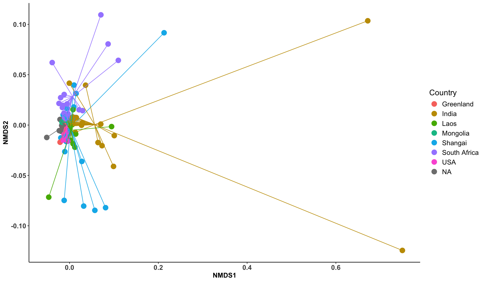
Dog type
beta_q0n$S %>%
vegan::metaMDS(., trymax = 500, k = 2, trace=0) %>%
vegan::scores() %>%
as_tibble(., rownames = "sample") %>%
dplyr::left_join(sample_metadata, by = join_by(sample == sample)) %>%
group_by(dog_type) %>%
mutate(x_cen = mean(NMDS1, na.rm = TRUE)) %>%
mutate(y_cen = mean(NMDS2, na.rm = TRUE)) %>%
ungroup() %>%
ggplot(aes(x = NMDS1, y = NMDS2, color = dog_type)) +
geom_point(size = 4) +
geom_segment(aes(x = x_cen, y = y_cen, xend = NMDS1, yend = NMDS2), alpha = 0.9, show.legend = FALSE) +
scale_color_manual(name = "Canids",
values = type_colors,
labels = new_labels) +
scale_fill_manual(name = "Canids",
values = type_colors,
labels = new_labels) +
theme_classic() +
theme(
axis.text.x = element_text(size = 12),
axis.text.y = element_text(size = 12),
axis.title = element_text(size = 12, face = "bold"),
axis.text = element_text(face = "bold", size = 12),
panel.background = element_blank(),
axis.line = element_line(size = 0.5, linetype = "solid", colour = "black"),
legend.text = element_text(size = 12),
legend.title = element_text(size = 14),
legend.position = "right", legend.box = "vertical"
) +
labs(color='Canids')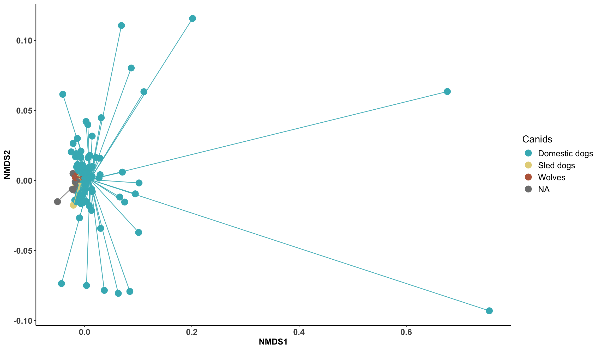
7.0.2.2 Neutral
Country
beta_q1n_dis %>%
vegan::metaMDS(., trymax = 500, k = 2, trace=0) %>%
vegan::scores() %>%
as_tibble(., rownames = "sample") %>%
dplyr::left_join(sample_metadata, by = join_by(sample == sample)) %>%
group_by(country) %>%
mutate(x_cen = mean(NMDS1, na.rm = TRUE)) %>%
mutate(y_cen = mean(NMDS2, na.rm = TRUE)) %>%
ungroup() %>%
ggplot(aes(x = NMDS1, y = NMDS2, color = country)) +
geom_point(size = 3, alpha = 0.5) +
geom_segment(aes(x = x_cen, y = y_cen, xend = NMDS1, yend = NMDS2), alpha = 0.5, show.legend = FALSE) +
theme_classic() +
theme(
axis.text.x = element_text(size = 12),
axis.text.y = element_text(size = 12),
axis.title = element_text(size = 12, face = "bold"),
axis.text = element_text(face = "bold", size = 12),
panel.background = element_blank(),
axis.line = element_line(
size = 0.5,
linetype = "solid",
colour = "black"
),
legend.text = element_text(size = 12),
legend.title = element_text(size = 14),
legend.position = "right",
legend.box = "vertical"
) +
labs(color = 'Country')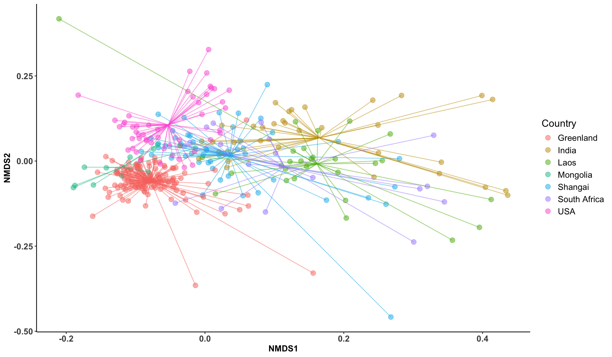
Dog type
beta_q1n_dis %>%
vegan::metaMDS(., trymax = 500, k = 2, trace=0) %>%
vegan::scores() %>%
as_tibble(., rownames = "sample") %>%
dplyr::left_join(sample_metadata, by = join_by(sample == sample)) %>%
group_by(dog_type) %>%
mutate(x_cen = mean(NMDS1, na.rm = TRUE)) %>%
mutate(y_cen = mean(NMDS2, na.rm = TRUE)) %>%
ungroup() %>%
ggplot(aes(x = NMDS1, y = NMDS2, color = dog_type)) +
geom_point(size = 3, alpha = 0.5) +
geom_segment(aes(x = x_cen, y = y_cen, xend = NMDS1, yend = NMDS2), alpha = 0.5, show.legend = FALSE) +
scale_color_manual(name = "Canids",
values = type_colors,
labels = new_labels) +
scale_fill_manual(name = "Canids",
values = type_colors,
labels = new_labels) +
theme_classic() +
theme(
axis.text.x = element_text(size = 12),
axis.text.y = element_text(size = 12),
axis.title = element_text(size = 12, face = "bold"),
axis.text = element_text(face = "bold", size = 12),
panel.background = element_blank(),
axis.line = element_line(
size = 0.5,
linetype = "solid",
colour = "black"
),
legend.text = element_text(size = 12),
legend.title = element_text(size = 14),
legend.position = "right",
legend.box = "vertical"
) +
labs(color = 'Canids')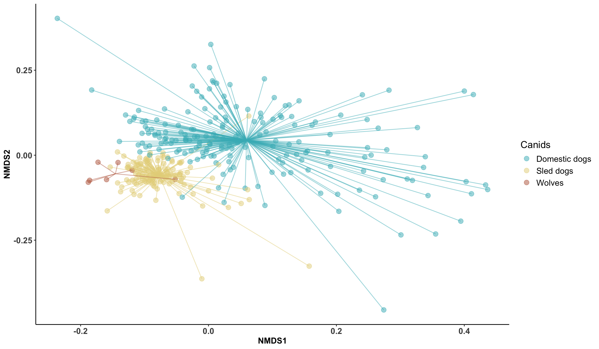
7.0.2.2.1 PCoa locality
pcoa_res <- ape::pcoa(beta_q1n_dis)
pcoa_df <- data.frame(pcoa_res$vectors) %>%
rownames_to_column("sample") %>%
left_join(sample_metadata, by = "sample")
var_exp <- pcoa_res$values$Relative_eig * 100centroids <- pcoa_df %>%
group_by(dog_type, locality) %>%
summarise(
Axis.1 = mean(Axis.1),
Axis.2 = mean(Axis.2),
.groups = "drop"
)
centroids_loc <- centroids %>%
mutate(group = paste(dog_type, locality, sep = "_"))
pcoa_df1 <- pcoa_df %>%
mutate(group = paste(dog_type, locality, sep = "_"))
ggplot(pcoa_df1, aes(Axis.1, Axis.2, color = group)) +
geom_point(size = 3, alpha = 0.7) +
stat_ellipse(level = 0.95, linewidth = 1) +
geom_point(
data = centroids_loc,
aes(Axis.1, Axis.2, fill = group),
color = "black",
shape = 21,
size = 6,
show.legend = FALSE
) +
labs(
x = paste0("PCoA1 (", round(var_exp[1], 1), "%)"),
y = paste0("PCoA2 (", round(var_exp[2], 1), "%)"),
color = "Group"
) +
theme_minimal() +
theme(legend.text = element_text(size = 8)) +
guides(color = guide_legend(ncol = 1))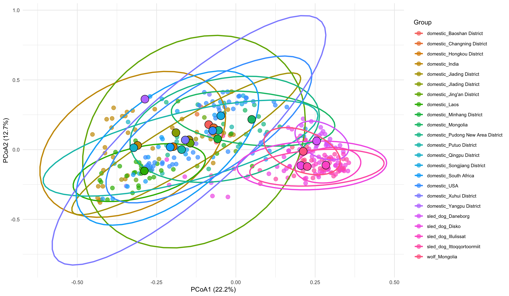
Centroid distances
centroids_loc <- pcoa_df %>%
group_by(dog_type, locality) %>%
summarise(
Axis.1 = mean(Axis.1),
Axis.2 = mean(Axis.2),
.groups = "drop"
)
centroids_loc <- centroids_loc %>%
mutate(group = paste(dog_type, locality, sep = "_"))
coords <- centroids_loc[, c("Axis.1", "Axis.2")] %>%
as.data.frame()
rownames(coords) <- centroids_loc$group
dist_loc <- dist(coords)
dist_loc_df <- as.data.frame(as.table(as.matrix(dist_loc))) %>%
rename(group1 = Var1,
group2 = Var2,
distance = Freq) %>%
filter(group1 != group2)
ggplot(dist_loc_df, aes(x = group1, y = group2, fill = distance)) +
geom_tile() +
scale_fill_viridis_c() +
theme_minimal() +
theme(axis.text.x = element_text(angle = 45, hjust = 1),
axis.title = element_blank()) +
labs(fill = "Centroids distance")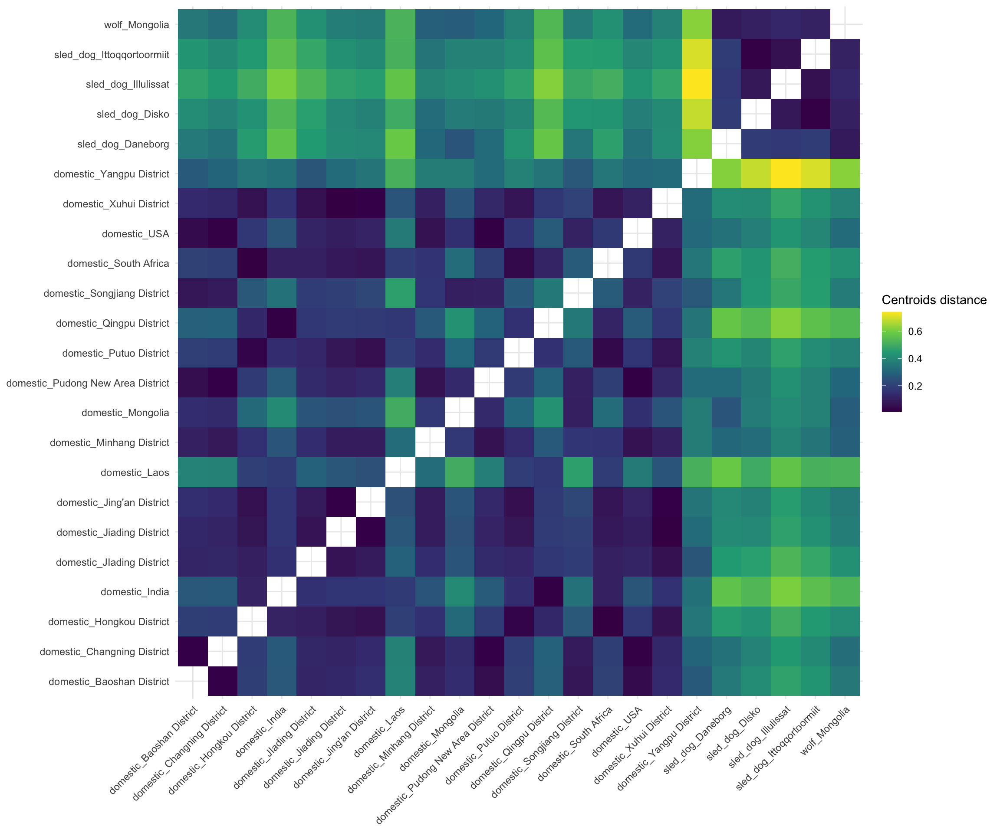
7.0.2.2.2 PCoa dog type
pcoa_res <- ape::pcoa(beta_q1n_dis)
pcoa_df <- data.frame(pcoa_res$vectors) %>%
rownames_to_column("sample") %>%
left_join(sample_metadata, by = "sample")
var_exp <- pcoa_res$values$Relative_eig * 100
centroids <- pcoa_df %>%
group_by(dog_type) %>%
summarise(
Axis.1 = mean(Axis.1),
Axis.2 = mean(Axis.2),
.groups = "drop"
)ggplot(pcoa_df, aes(Axis.1, Axis.2, color = dog_type)) +
geom_point(size = 3, alpha = 0.7) +
stat_ellipse(level = 0.95, linewidth = 1) +
geom_point(data = centroids,
aes(Axis.1, Axis.2, fill = dog_type),
color = "black",
shape = 21,
size = 6,
show.legend = FALSE) +
scale_color_manual(
name = "Canid",
values = type_colors,
labels = new_labels)+
scale_fill_manual(
name = "Canid",
values = type_colors,
labels = new_labels) +
labs(
x = paste0("PCoA1 (", round(var_exp[1], 1), "%)"),
y = paste0("PCoA2 (", round(var_exp[2], 1), "%)"),
color = "Canid"
) +
theme_classic(base_size = 14)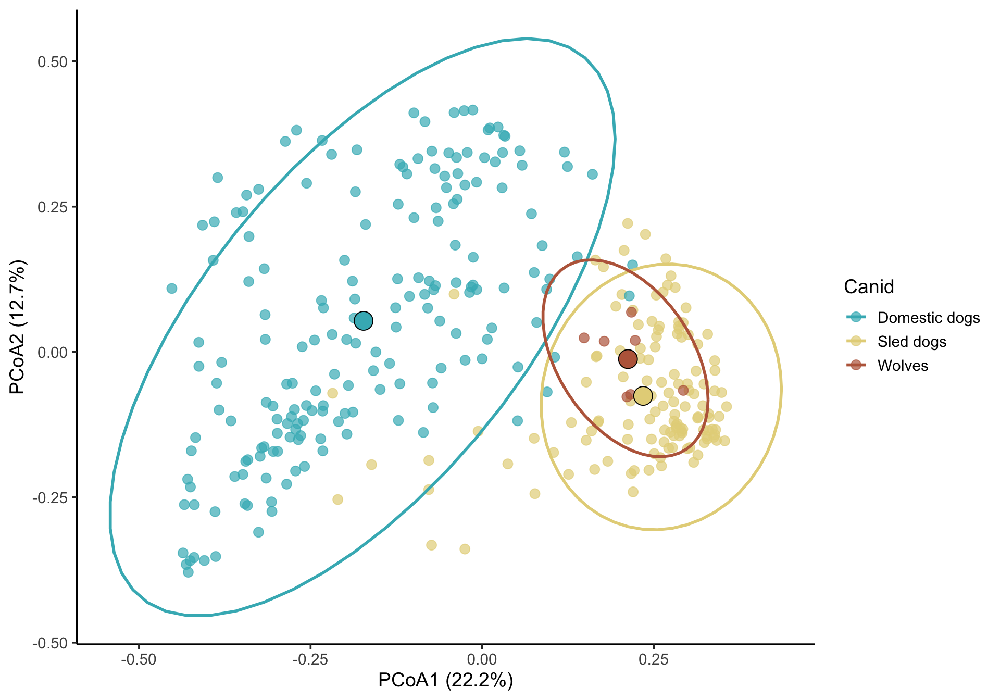
Show samples closest to domestic dogs
domestic_centroid <- centroids %>% filter(dog_type == "domestic")
sled_centroid <- centroids %>% filter(dog_type == "sled_dog")
pcoa_df <- pcoa_df %>%
mutate(dist_to_domestic = sqrt((Axis.1 - domestic_centroid$Axis.1)^2 +
(Axis.2 - domestic_centroid$Axis.2)^2),
dist_to_sled = sqrt((Axis.1 - sled_centroid$Axis.1)^2 +
(Axis.2 - sled_centroid$Axis.2)^2)
)
closest_sled_to_domestic <- pcoa_df %>%
filter(dog_type == "sled_dog") %>%
arrange(dist_to_domestic) %>%
slice_head(n = 5)
closest_samples <- closest_sled_to_domestic$sample
ggplot(pcoa_df, aes(Axis.1, Axis.2, color = dog_type)) +
geom_point(size = 3, alpha = 0.7) +
stat_ellipse(aes(color = dog_type), level = 0.95, linewidth = 1.2) +
geom_point(
data = centroids,
aes(x = Axis.1, y = Axis.2, fill = dog_type),
color = "black",
shape = 21,
size = 6,
show.legend = FALSE
) +
geom_point(
data = pcoa_df %>% filter(sample %in% closest_samples),
aes(x = Axis.1, y = Axis.2),
shape = 21,
fill = NA,
color = "black",
size = 5,
stroke = 1.5
) +
scale_color_manual(name = "Canid",
values = type_colors,
labels = new_labels) +
scale_fill_manual(name = "Canid",
values = type_colors,
labels = new_labels) +
geom_text_repel(
data = closest_sled_to_domestic,
aes(x = Axis.1, y = Axis.2, label = locality),
size = 4,
box.padding = 0.5,
point.padding = 0.5,
segment.color = "grey50"
) +
labs(
x = paste0("PCoA1 (", round(var_exp[1], 1), "%)"),
y = paste0("PCoA2 (", round(var_exp[2], 1), "%)"),
color = "Dog type"
) +
theme_classic(base_size = 14)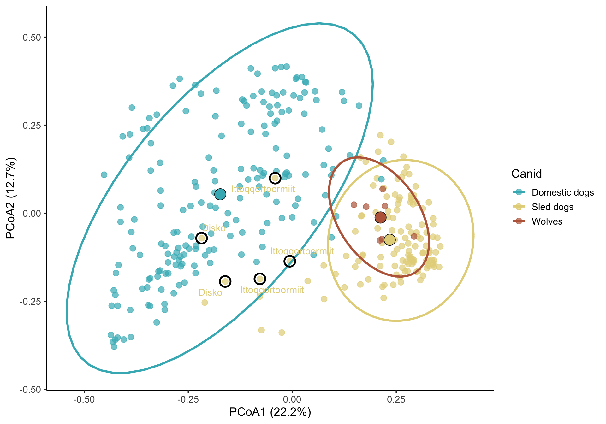
Centroid distances
centroid_coords <- centroids[, c("Axis.1", "Axis.2")]
rownames(centroid_coords) <- centroids$dog_type
centroid_dist <- dist(centroid_coords)
centroid_dist_mat <- as.matrix(centroid_dist)
dist_table <- as.data.frame(as.table(centroid_dist_mat)) %>%
rename(group1 = Var1, group2 = Var2, distance = Freq) %>%
filter(group1 != group2) %>%
arrange(distance)ggplot(dist_table, aes(x = group1, y = group2, fill = distance)) +
geom_tile() +
scale_fill_viridis_c() +
theme_minimal() +
theme(axis.text.x = element_text(angle=45, hjust=1),
axis.title = element_blank()) +
labs(fill="Centroids distance")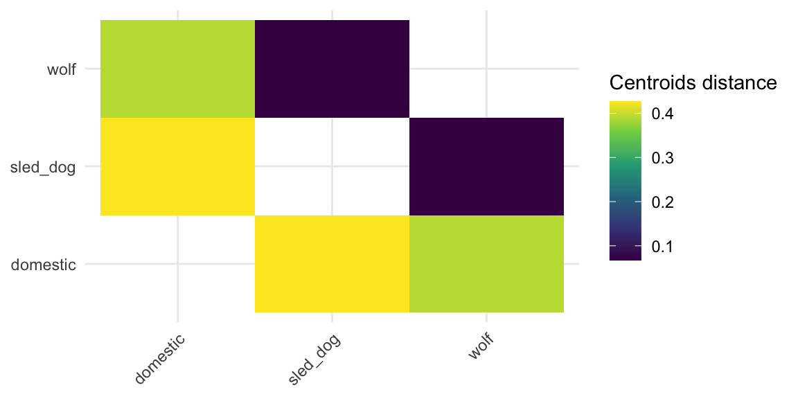
7.0.2.2.3 Distance comparison test
This tests whether samples of the same dog type are more similar than different ones
dist_mat <- as.matrix(beta_q1n_dis)
dist_df <- as.data.frame(dist_mat) %>%
mutate(sample1 = rownames(.)) %>%
pivot_longer(-sample1, names_to = "sample2", values_to = "distance") %>%
filter(sample1 < sample2)
meta <- sample_metadata_ordered %>%
mutate(sample = rownames(.))
dist_df <- dist_df %>%
left_join(meta, by = c("sample1" = "sample")) %>%
rename(dog1 = dog_type, loc1 = locality) %>%
left_join(meta, by = c("sample2" = "sample")) %>%
rename(dog2 = dog_type, loc2 = locality)
dist_df <- dist_df %>%
mutate(
same_dog = dog1 == dog2,
same_locality = loc1 == loc2
)dist_cross_loc <- dist_df %>%
filter(!same_locality)
wilcox.test(distance ~ same_dog, data = dist_cross_loc)
Wilcoxon rank sum test with continuity correction
data: distance by same_dog
W = 327359957, p-value < 2.2e-16
alternative hypothesis: true location shift is not equal to 0ggplot(dist_cross_loc, aes(x = same_dog, y = distance)) +
geom_boxplot() +
labs(
x = "Same dog type",
y = "Beta diversity distance",
title = "Distance comparison (across localities only)"
)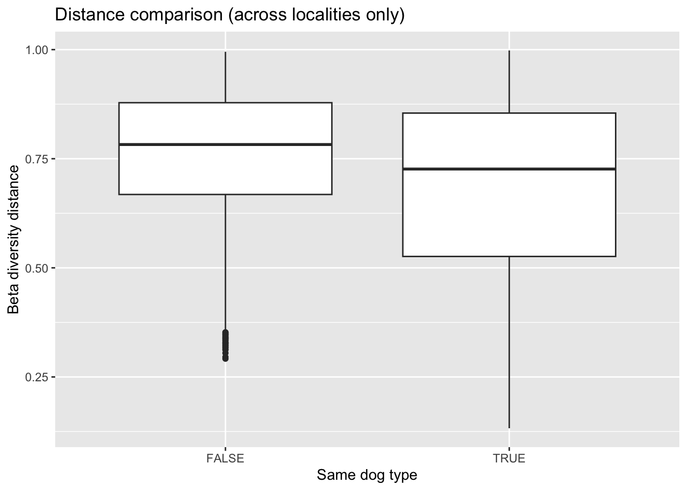
If same_dog == TRUE has lower distances: suggests similarity within dog types across locations7.0.2.3 Phylogenetic
Country
beta_q1p_dis %>%
vegan::metaMDS(., trymax = 500, k = 2, trace=0) %>%
vegan::scores() %>%
as_tibble(., rownames = "sample") %>%
dplyr::left_join(sample_metadata, by = join_by(sample == sample)) %>%
group_by(country) %>%
mutate(x_cen = median(NMDS1, na.rm = TRUE)) %>%
mutate(y_cen = median(NMDS2, na.rm = TRUE)) %>%
ungroup() %>%
ggplot(aes(x = NMDS1, y = NMDS2, color = country)) +
geom_point(size = 3, alpha = 0.5) +
geom_segment(aes(x = x_cen, y = y_cen, xend = NMDS1, yend = NMDS2), alpha = 0.5, show.legend = FALSE) +
theme_classic() +
theme(
axis.text.x = element_text(size = 12),
axis.text.y = element_text(size = 12),
axis.title = element_text(size = 12, face = "bold"),
axis.text = element_text(face = "bold", size = 12),
panel.background = element_blank(),
axis.line = element_line(size = 0.5, linetype = "solid", colour = "black"),
legend.text = element_text(size = 12),
legend.title = element_text(size = 14),
legend.position = "right", legend.box = "vertical"
) +
labs(color='Country')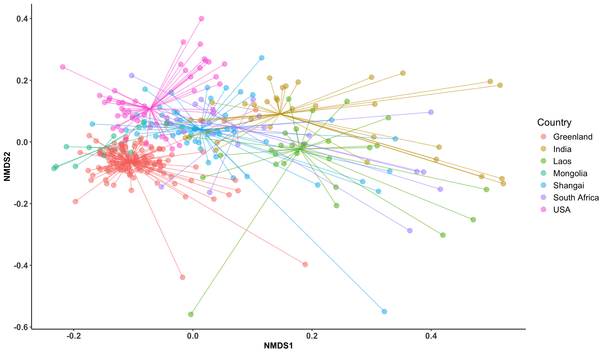
Dog type
beta_q1p_dis %>%
vegan::metaMDS(., trymax = 500, k = 2, trace=0) %>%
vegan::scores() %>%
as_tibble(., rownames = "sample") %>%
dplyr::left_join(sample_metadata, by = join_by(sample == sample)) %>%
group_by(dog_type) %>%
mutate(x_cen = mean(NMDS1, na.rm = TRUE)) %>%
mutate(y_cen = mean(NMDS2, na.rm = TRUE)) %>%
ungroup() %>%
ggplot(aes(x = NMDS1, y = NMDS2, color = dog_type)) +
geom_point(size = 3, alpha = 0.5) +
geom_segment(aes(x = x_cen, y = y_cen, xend = NMDS1, yend = NMDS2), alpha = 0.5, show.legend = FALSE) +
scale_color_manual(name = "Canids",
values = type_colors,
labels = new_labels) +
scale_fill_manual(name = "Canids",
values = type_colors,
labels = new_labels) +
theme_classic() +
theme(
axis.text.x = element_text(size = 12),
axis.text.y = element_text(size = 12),
axis.title = element_text(size = 12, face = "bold"),
axis.text = element_text(face = "bold", size = 12),
panel.background = element_blank(),
axis.line = element_line(
size = 0.5,
linetype = "solid",
colour = "black"
),
legend.text = element_text(size = 12),
legend.title = element_text(size = 14),
legend.position = "right",
legend.box = "vertical"
) +
labs(color = 'Canids')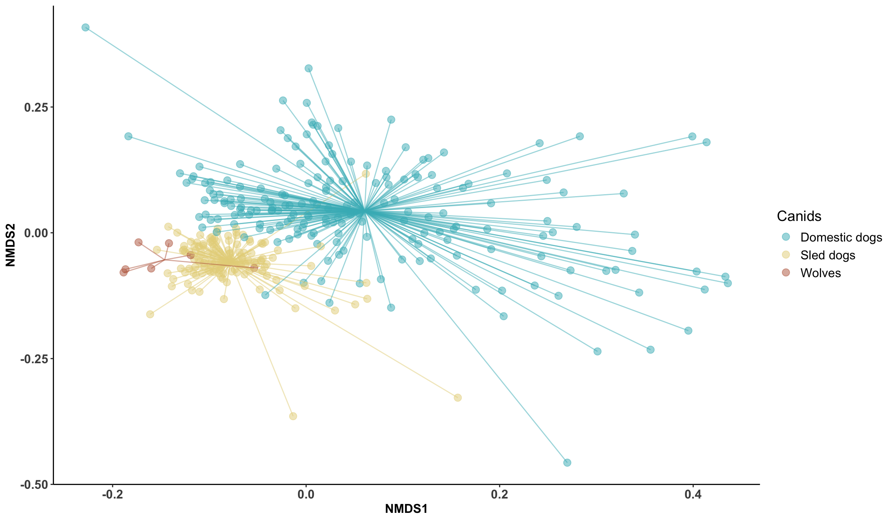
load("data/data.Rdata")
genome_metadata <- genome_metadata %>%
mutate(phylum = case_when(
phylum == "Bacillota_A" ~ "Bacillota",
phylum == "Bacillota_C" ~ "Bacillota",
phylum == "Bacillota_B" ~ "Bacillota",
phylum == "Bacillota_I" ~ "Bacillota",
TRUE ~ phylum))
remove_sled <- read_csv("data/sample_metadata.csv") %>%
filter(season=="winter")#63
sample_metadata <- sample_metadata %>%
mutate(country = if_else(country == "Shangai domestic dog", "Shangai", country)) %>%
filter(!sample %in% remove_sled$sample) %>%
mutate(
dog_type = case_when(
breed == "Wolf" ~ "wolf",
country == "Greenland" ~ "sled_dog",
TRUE ~ "domestic"
)
)
genome_counts_filt <- genome_counts_filt %>%
select(one_of(c("genome",sample_metadata$sample)))%>%
filter(rowSums(. != 0, na.rm = TRUE) > 0) %>%
select_if(~!all(. == 0))
genome_metadata <- genome_metadata %>%
semi_join(., genome_counts_filt, by = "genome") %>%
arrange(match(genome,genome_counts_filt$genome))
genome_tree <- keep.tip(genome_tree, tip=genome_metadata$genome)#load("data/ancombc_all.Rdata")
phylo_samples <- sample_metadata %>%
column_to_rownames("sample") %>%
sample_data()
phylo_genome <- genome_counts_filt %>%
select(one_of(c("genome", rownames(phylo_samples)))) %>%
column_to_rownames("genome") %>%
otu_table(., taxa_are_rows = TRUE)
phylo_taxonomy <- genome_metadata %>%
filter(genome %in% rownames(phylo_genome)) %>%
mutate(genome2 = genome) %>%
column_to_rownames("genome2") %>%
dplyr::select(domain, phylum, class, order, family, genus, species, genome) %>%
as.matrix() %>%
tax_table()
physeq_genome <- phyloseq(phylo_genome, phylo_taxonomy, phylo_samples)
region_pairs_country <- combn(unique(sample_metadata$country), 2, simplify = FALSE)7.1 Phylum
results_species <- lapply(region_pairs_species, function(pair) {
subset_idx <- sample_metadata$dog_type %in% pair
fit <- ancombc2(data = prune_samples(subset_idx, physeq_genome),
fix_formula = "dog_type",
tax_level = "phylum",
group = "dog_type",
global = FALSE,
pairwise = FALSE,
p_adj_method = "BH",
lib_cut = 0,
struc_zero = TRUE,
alpha = 0.05
)
# Extract main results table
res_table <- fit$res
# Add comparison label
res_table$comparison <- paste(pair, collapse = "_vs_")
return(res_table)
})
names(results_species) <- sapply(region_pairs_species, paste, collapse = "_vs_")
save(results_species,
file = "data/ancombc_phylum_sled_dogs_wolf.Rdata")7.1.1 Domestic vs sled_dog
Enriched in domestic dogs
domestic <- results_species$domestic_vs_sled_dog %>%
filter(q_dog_typesled_dog < 0.05) %>%
filter(lfc_dog_typesled_dog < 0) %>%
arrange(lfc_dog_typesled_dog)5 taxon lfc_(Intercept) lfc_dog_typesled_dog se_(Intercept) se_dog_typesled_dog W_(Intercept) W_dog_typesled_dog p_(Intercept) p_dog_typesled_dog q_(Intercept) q_dog_typesled_dog
1 Verrucomicrobiota 1.7655122 -4.4051074 0.2031668 0.2487605 8.689962 -17.708225 5.242163e-14 2.634383e-33 3.145298e-13 3.161260e-32
2 Fibrobacterota 0.6414158 -1.5952566 0.1579834 0.2142150 4.060020 -7.446990 6.257110e-05 1.006657e-12 1.501706e-04 3.019972e-12
3 Actinomycetota 0.6471709 -1.3133460 0.1433366 0.2017759 4.515044 -6.508935 8.830341e-06 2.824737e-10 2.649102e-05 6.779368e-10
4 Campylobacterota 0.4924824 -0.9626481 0.1731376 0.2355649 2.844456 -4.086552 4.727268e-03 5.506456e-05 7.090901e-03 7.341941e-05
5 Bacillota 0.4720652 -0.9163599 0.1248311 0.1698073 3.781631 -5.396471 1.850146e-04 1.302646e-07 3.700292e-04 2.233108e-07
diff_(Intercept) diff_dog_typesled_dog passed_ss_(Intercept) passed_ss_dog_typesled_dog comparison
1 TRUE TRUE TRUE TRUE domestic_vs_sled_dog
2 TRUE TRUE TRUE TRUE domestic_vs_sled_dog
3 TRUE TRUE TRUE TRUE domestic_vs_sled_dog
4 TRUE TRUE TRUE TRUE domestic_vs_sled_dog
5 TRUE TRUE TRUE TRUE domestic_vs_sled_dogEnriched in sled dogs
sled <- results_species$domestic_vs_sled_dog %>%
filter(q_dog_typesled_dog < 0.05) %>%
filter(lfc_dog_typesled_dog>0) %>%
arrange(-lfc_dog_typesled_dog)5 taxon lfc_(Intercept) lfc_dog_typesled_dog se_(Intercept) se_dog_typesled_dog W_(Intercept) W_dog_typesled_dog p_(Intercept) p_dog_typesled_dog q_(Intercept) q_dog_typesled_dog
1 Deferribacterota -2.5253274 4.302004 0.2601693 0.3926899 -9.706477 10.955217 2.899195e-19 2.690829e-23 3.479034e-18 1.614497e-22
2 Cyanobacteriota -0.9347881 2.122020 0.1658551 0.2195207 -5.636174 9.666604 3.791497e-08 1.396198e-19 1.516599e-07 5.584791e-19
3 Spirochaetota -0.6646144 1.517122 0.1792274 0.2474112 -3.708218 6.131987 2.455981e-04 2.531708e-09 4.210253e-04 5.063417e-09
4 Fusobacteriota -0.4482000 1.169995 0.1687383 0.2223743 -2.656185 5.261375 8.288056e-03 2.582904e-07 9.945667e-03 3.874356e-07
5 Desulfobacterota -0.4753656 1.100068 0.1712960 0.2828393 -2.775112 3.889373 5.841699e-03 1.221834e-04 7.788932e-03 1.466201e-04
diff_(Intercept) diff_dog_typesled_dog passed_ss_(Intercept) passed_ss_dog_typesled_dog comparison
1 TRUE TRUE TRUE TRUE domestic_vs_sled_dog
2 TRUE TRUE TRUE TRUE domestic_vs_sled_dog
3 TRUE TRUE TRUE TRUE domestic_vs_sled_dog
4 TRUE TRUE TRUE TRUE domestic_vs_sled_dog
5 TRUE TRUE TRUE TRUE domestic_vs_sled_dog7.1.2 Sled_dog vs wolves
Enriched in sled dogs
sled <- results_species$sled_dog_vs_wolf %>%
filter(q_dog_typewolf < 0.05) %>%
filter(lfc_dog_typewolf < 0) %>%
arrange(lfc_dog_typewolf)2 taxon lfc_(Intercept) lfc_dog_typewolf se_(Intercept) se_dog_typewolf W_(Intercept) W_dog_typewolf p_(Intercept) p_dog_typewolf q_(Intercept) q_dog_typewolf diff_(Intercept)
1 Deferribacterota 0.07243946 -6.019755 NA 0.8337283 NA -7.220283 1 2.636752e-11 1 1.582051e-10 FALSE
2 Spirochaetota 0.07935738 -2.179923 NA 0.2295691 NA -9.495716 1 4.658776e-17 1 5.590531e-16 FALSE
diff_dog_typewolf passed_ss_(Intercept) passed_ss_dog_typewolf comparison
1 TRUE TRUE TRUE sled_dog_vs_wolf
2 TRUE TRUE TRUE sled_dog_vs_wolfEnriched in wolves
wolf <- results_species$sled_dog_vs_wolf %>%
filter(q_dog_typewolf < 0.05) %>%
filter(lfc_dog_typewolf > 0) %>%
arrange(-lfc_dog_typewolf)6 taxon lfc_(Intercept) lfc_dog_typewolf se_(Intercept) se_dog_typewolf W_(Intercept) W_dog_typewolf p_(Intercept) p_dog_typewolf q_(Intercept) q_dog_typewolf diff_(Intercept)
1 Fibrobacterota -0.24650359 3.4558753 NA 0.7186902 NA 4.808574 1 3.949179e-06 1 1.147847e-05 FALSE
2 Verrucomicrobiota -0.59300432 2.6810750 NA 0.7206598 NA 3.720306 1 5.844696e-04 1 1.168939e-03 FALSE
3 Campylobacterota -0.10203422 1.7847794 NA 0.3487715 NA 5.117331 1 9.289130e-07 1 3.715652e-06 FALSE
4 Bacteroidota -0.08109928 1.3272016 NA 0.2796743 NA 4.745526 1 4.782696e-06 1 1.147847e-05 FALSE
5 Actinomycetota -0.05447879 0.7453537 NA 0.2370262 NA 3.144604 1 2.003060e-03 1 3.433816e-03 FALSE
6 Fusobacteriota -0.04718571 0.5859478 NA 0.2710413 NA 2.161840 1 3.220580e-02 1 4.830870e-02 FALSE
diff_dog_typewolf passed_ss_(Intercept) passed_ss_dog_typewolf comparison
1 TRUE TRUE TRUE sled_dog_vs_wolf
2 TRUE TRUE FALSE sled_dog_vs_wolf
3 TRUE TRUE TRUE sled_dog_vs_wolf
4 TRUE TRUE TRUE sled_dog_vs_wolf
5 TRUE TRUE TRUE sled_dog_vs_wolf
6 TRUE TRUE FALSE sled_dog_vs_wolf7.1.3 Plots
taxa <- as.data.frame(physeq_genome@tax_table) %>%
distinct(phylum)
colors_alphabetic <- read_tsv("https://raw.githubusercontent.com/earthhologenome/EHI_taxonomy_colour/main/ehi_phylum_colors.tsv") %>%
mutate_at(vars(phylum), ~ str_replace(., "[dpcofgs]__", "")) %>%
right_join(taxa, by = join_by(phylum == phylum)) %>%
dplyr::select(phylum, colors) %>%
mutate(colors = str_c(colors, "80")) %>%
unique() %>%
dplyr::arrange(phylum)Rows: 202 Columns: 2
── Column specification ──────────────────────────────────────────────────────────────────────────────────────────────────────────────────────────────────────────────────────────────────────────
Delimiter: "\t"
chr (2): phylum, colors
ℹ Use `spec()` to retrieve the full column specification for this data.
ℹ Specify the column types or set `show_col_types = FALSE` to quiet this message.for (name in names(results_species)) {
parts <- strsplit(name, "_vs_")[[1]]
name1 <- parts[1]
name2 <- parts[2]
title <- paste0("Enriched in ", name1, " ( − LFC ) vs ", "Enriched in ", name2, " ( + LFC )")
tab <- results_species[[name]]
coef <- grep("^lfc_dog_type", colnames(tab), value = TRUE)[1]
qcol <- sub("^lfc_", "q_", coef)
plot_data <- tab %>%
filter(.data[[qcol]] < 0.05) %>%
mutate(logFC = .data[[coef]])
tax_color <- plot_data %>%
rename(phylum=1) %>%
left_join(., colors_alphabetic, by = "phylum") %>%
dplyr::arrange(phylum) %>%
dplyr::select(colors) %>%
pull()
p <- ggplot(plot_data, aes(x = reorder(taxon, logFC), y = logFC, fill = taxon)) +
geom_col() +
scale_fill_manual(values = tax_color) +
coord_flip() +
theme(
panel.background = element_blank(),
axis.line = element_line(size = 0.5, linetype = "solid", colour = "black"),
axis.text.x = element_text(size = 12),
axis.text.y = element_text(size = 12),
axis.title = element_text(size = 14, face = "bold"),
legend.text = element_text(size = 12),
legend.title = element_text(size = 12, face = "bold"),
legend.position = "right",
legend.box = "vertical",
plot.title = element_text(size = 14, face = "bold", hjust = 0.5)
) +
labs(
title = title,
x = "Phylum",
y = "Log-Fold Change",
fill = "Phylum"
)
ggsave(paste0("Figures/Fig_phylum_", name, ".png"),
plot = p,
width = 6,
height = 8)
}